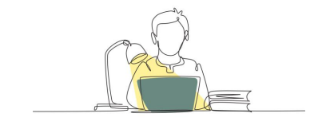
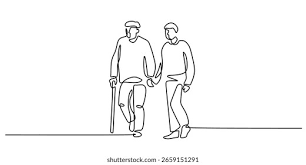
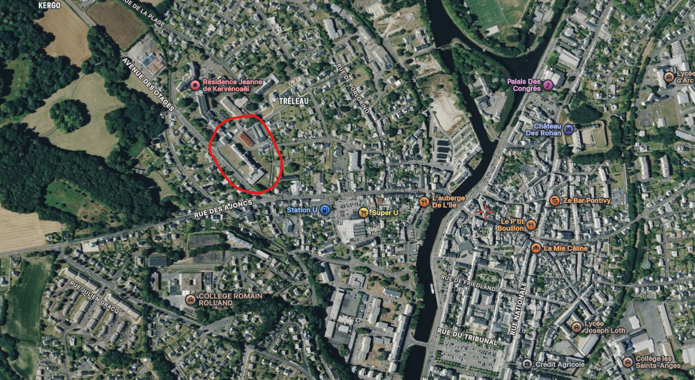
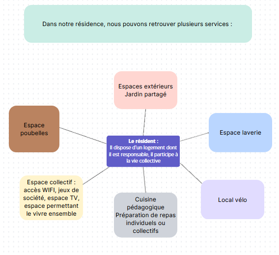
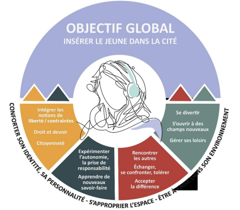
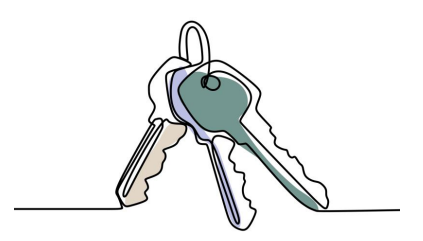
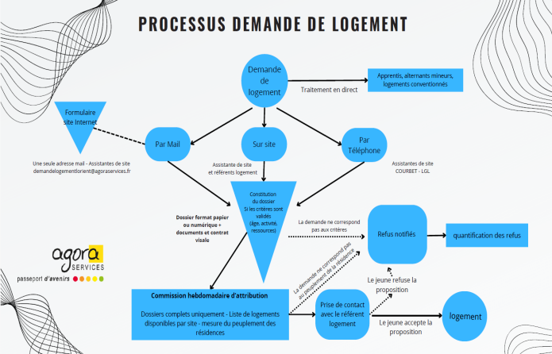

Le projet d'établissement est un document rendu obligatoire par la loi du 2 janvier 2002. Ce document présente et définit les objectifs de la structure en termes de coordination des équipes, de modalités d'accueil des résidents ainsi que de missions qui lui sont confiées. Le projet d'établissement est élaboré pour une durée de cinq ans.
Ce document est évolutif : il intègre en continu les changements et les évolutions du fonctionnement ou de l'organisation de la structure, ce qui implique une révision régulière du projet d'établissement.
La rédaction de ce document nécessite une démarche de co-construction avec toutes les parties prenantes de la structure. Cela permet d'impliquer les personnes concernées dans la démarche, afin qu'elles se sentent pleinement investies par le projet. Cette approche favorise également leur engagement dans la vie de la résidence.
Dans cette démarche, des questionnaires de satisfaction, ainsi que des enquêtes sur la perception de la vie au sein de la résidence, ont été proposés aux jeunes. Par ailleurs, des temps d'échanges ont été organisés, d'une part avec les seniors et d'autre part avec les jeunes, afin de recueillir leurs avis, leurs propositions, mais aussi d'identifier leurs priorités. L'ensemble de ces actions s'inscrit dans une démarche d'amélioration continue.
Les temps d'échanges avec les professionnels, les séniors et les jeunes ont eu lieu au mois de mars et la passation des questionnaires s'est déroulée du 09 avril au 15 mai 2026.
Enfin, des entretiens ont été menés auprès des professionnels pour obtenir leurs retours. Ils ont été interrogés sur différents points :

Il y a 60 ans, l'accès au logement pour les jeunes travailleurs était déjà difficile. Cette problématique demeure aujourd'hui d'actualité, comme en témoigne une demande toujours aussi importante.
2 domaines d'activités : logement et service et formation + services transversaux (points avec les dessins du site)
L'histoire d'Agora Services commence dans les années 50. Les industries de Lorient ont des besoins en termes de main-d'œuvre et les jeunes ruraux quittent leur campagne pour venir travailler à la ville. l'accueil de ces jeunes n'est pas prévu et le manque de logement se fait ressentir.
Jacques Le Cabellec
Née en 1956 à Lorient, l'association Agora Services est une association loi 1901, par ses statuts et une entreprise bretonne de l'économie sociale et solidaire par ses actions menées dans les secteurs du logement des jeunes et des séniors et de la formation. Agora Services vise l'insertion, la réinsertion ou le maintien en société des personnes. A partir du… Agora Services comprend le domaine d'activité.. et la restauration est un domaine d'activité à part entière.
Depuis plus de 60 ans, Agora Services propose des logements et des services, de la formation et de l'emploi, de la restauration et elle propose également des locations de salle pour accueillir des groupes en formation ou autre.
Pour la partie logement et services, elle est proposée à un public ayant des attentes, des besoins et des profils très variés. Elle propose une aide dans la transition résidentielle, sociale et professionnelle. Les résidences jeunes et séniors favorisent l'intergénérationnel pour permettre les rencontres de tous âges. Les trois axes fondateurs de l'association sont la mixité des publics, l'innovation et le développement territorial (schéma).
Le siège social se situe au 2A Boulevard Franchet d'Esperey, 56100 Lorient.
Paysage de l'existant avec chiffre (1000 logements…)
Anciennement connu sous les appellations d'hospice Sainte-Eugénie ou de Grand-Parc, le projet de la résidence a été initié en 2012. Ce bâtiment d'époque napoléonienne a fait l'objet d'une restructuration et d'une rénovation complètes : une partie, datant des années 1930, a notamment été démolie puis reconstruite. La résidence a finalement été inaugurée le 21 septembre 2021, marquant l'aboutissement d'un projet engagé près de dix ans auparavant.
L'ouverture de la résidence constitue la naissance d'un projet d'habitat intergénérationnel jusque-là inédit à Pontivy.
La résidence intergénérationnelle de Ker Pondi se situe 6 avenue des Otages à Pontivy (56300).
Elle se situe à dix minutes à pied du centre-ville de Pontivy, à proximité de différents commerces et transports. Cette localisation permet un accès facilitant pour les deux publics accueillis.

Pontivy est le chef-lieu d'arrondissement du département du Morbihan en région Bretagne. Créée en 2000 en application de la loi relative au renforcement et à la simplification de la coopération intercommunale de 1999 et ayant connu plusieurs évolutions majeures depuis, Pontivy Communauté compte 24 communes depuis le 1er janvier 2022. Pontivy Communauté comptait 46 475 habitants en 2020 dont 32% vivent à Pontivy.
Entre 2013 et 2019, Pontivy a enregistré une nette progression de son dynamisme démographique ainsi qu'un renforcement de son attractivité.
Selon les estimations, la population de Pontivy s'élèverait à 14 591 habitants en 2026, ce qui la place au 6ᵉ rang des communes les plus peuplées du Morbihan et au 19ᵉ rang en Bretagne.
Le territoire de Pontivy Communauté et ses 24 communes constituent un bassin de vie dynamique et innovant.
L'accès au logement constitue aujourd'hui un enjeu majeur pour les jeunes, confrontés à des difficultés croissantes pour se loger de manière stable et adaptée à leurs besoins.
L'offre de logements "classiques" est faible et peu adaptée au public jeunes. La typologie des logements ne correspond pas à la demande des jeunes car la part de petits logements de type T1 et T1 bis est sous-représentée.
De plus, ces logements sont essentiellement concentrés sur le centre historique de Pontivy. Ces logements sont la plupart du temps relativement anciens et mériteraient une réhabilitation thermique et énergétique afin de diminuer les dépenses pour les jeunes.
Le parc de logements publics est également souvent difficile d'accès pour les jeunes. Le système d'attribution peut être dissuasif compte-tenu de la longueur des délais d'attribution.
Nous constatons également que les jeunes issus de minorités ethniques rencontrent encore des difficultés persistantes dans l'accès au logement.
Ces difficultés ont des conséquences sur le fonctionnement de la résidence, qui observe un allongement des durées de séjour des jeunes, dépassant parfois les deux ans, pourtant fixés comme durée maximale. Les départs s'effectuent ainsi de plus en plus tardivement et deviennent plus complexes.
Cette situation conduit également la résidence à rechercher des solutions et à développer des axes d'action afin de favoriser une rotation plus fluide des occupants au sein des logements temporaires.
(ajouter durée moyenne de séjour en 2021 et en 2025 + analyser l'écart entre les deux)
Selon l'Observatoire breton des jeunes, la population des 13-29 ans s'élevait à 8 304 individus en 2022 sur le territoire. L'indice de jeunesse était de 0,73, un niveau inférieur à celui de la Bretagne (0,80), traduisant une proportion de jeunes légèrement plus faible.
Sur le plan social, le taux de pauvreté des moins de 30 ans atteignait 20,1 % en 2020, contre 12,4 % pour l'ensemble de la population.
En matière d'emploi, 6 730 postes étaient occupés par des jeunes de 29 ans ou moins en 2021. Par ailleurs, 515 demandeurs d'emploi de moins de 25 ans étaient inscrits dans les catégories A, B ou C en 2025-2026.
Le taux de scolarisation des 15-29 ans s'élevait à 42,5 % sur le territoire de Pontivy Communauté en 2022, un niveau inférieur à la moyenne régionale (48,9 %). Au total, 3 002 jeunes de cette tranche d'âge étaient scolarisés.
Le territoire dispose de solutions de mobilité (réseaux BreizhGo et Pondibus) et d'infrastructures adaptées, notamment pour les personnes en situation de handicap.
La présence de deux ESAT sur le territoire témoigne également de publics en situation de handicap susceptibles d'intégrer une Résidence Habitat Jeunes.
Enfin, le tissu économique local est fortement marqué par le secteur agroalimentaire. De ce fait, les jeunes accueillis à la résidence sont fréquemment employés dans cette filière.
Selon l'Observatoire de l'URHAJ en 2024, 82 résidences sont implantées et 26 le sont en diffus sur la région Bretagne (dont 20% sur le département du Morbihan). Cela représente 3 689 logements gérés sur 46 communes bretonnes. Plus de 90% des logements sont des T1, T1' et T1 bis.
Nous avons pu observer les besoins en termes de logements sur le territoire à l'ouverture de la résidence de Ker Pondi puisqu'elle a été littéralement prise d'assaut. En effet, l'ensemble des 46 logements ont été attribués en trois semaines. Depuis, plus de 210 jeunes ont séjourné sur la résidence et nous enregistrons des taux d'occupation conséquents tout au long de l'année.
| Raison Sociale | Agora Services |
| Date de déclaration en préfecture de l'association | 2 décembre 1975 |
| Etablissement | Résidence intergénérationnelle de Ker Pondi |
| Adresse | 6 avenue des Otages, Pontivy 56300 |
| Téléphone | 02.97.51.44.58 |
| residence-kerpondi@agoraservices.fr | |
| Site internet | https://www.agoraservices.bzh/ |
| Activité et capacité | Location de logements |
| Nature juridique de la structure | Association déclarée loi 1901 |
| Bailleur | Les Ajoncs |
| Patrimoine | ? |
| Autorisation et agrément | Arrêté d'autorisation le 11 juillet 2016 |
| Statut | Résidence intergénérationnelle (FJT et résidence séniors) |
| SIRET | 777 843 319 00057 |
| APE | 68.20A |
| Président.e du CA | Olivier le Ny |
| Directeur/trice | Loïc Hirrien |
| Organisme gestionnaire | Agora Services |
| Date de création | 21/09/2021 |
La résidence dispose de 24 logements à destination des séniors autonomes ou semi-autonomes, répartis sur 3 niveaux avec ascenseur. Les logements sont des T2 et ont une superficie variant entre 40 et 48m². L'ensemble des logements est accessible aux personnes à mobilité réduite. Les logements à destination des séniors ne sont pas meublés, il leur convient de les aménager et de les personnaliser selon leurs envies.
La résidence compte 16 logements de type PLUS qui sont des logements à Prêt Locatif à usage social qui correspondent aux HLM traditionnels.
Les plafonds de revenus pour obtenir un logement social de type PLUS dépendent de la composition du foyer, de la zone géographique du logement et du revenu fiscal de référence de l'année N-2. Pour les foyers composés d'une personne dans les régions hors Paris et Île-de-France, le plafond des revenus est de 23 403 euros. Pour les foyers composés de deux personnes dans ces mêmes régions, le plafond est de 31 254 euros.
Il y a également 8 logements de type PLS au premier étage qui sont des logements financés par le Prêt Locatif Social. Les plafonds de revenus pour les logements PLS sont plus élevés que ceux des logements PLUS. Ils correspondent aux plafonds PLUS majoré de 30%. Ils sont attribués aux candidats locataires ne pouvant pas prétendre aux locations HLM, mais ne disposant pas des ressources suffisantes pour se loger dans le privé. L'attribution de ces logements dépend des mêmes critères que ceux des logements PLUS. Pour les foyers composés d'une personne dans les régions hors Paris et Île- de-France, le plafond des revenus est de 30 424 euros. Pour les foyers composés de deux personnes dans ces mêmes régions, le plafond est de 40 630 euros.
La résidence se distingue des structures pour personnes âgées de type foyer-logement ou résidence autonomie, dans la mesure où elle n'est pas médicalisée. Elle ne propose ni prestations de soins sur site ni service de restauration collective. Elle a été créée en réponse à un besoin de lutte contre l'isolement des seniors.
Elle dispose également de 46 logements jeunes (80 places) répartis également sur 3 étages avec ascenseur. La superficie des logements varie entre 20 et 37m². Parmi eux, 6 logements sont accessibles pour les personnes à mobilité réduite. Les logements sont meublés (lit 2 personnes, table, chaises, placards et étagères pour les plus petits logements) et équipés d'une kitchenette, de sanitaires et d'une salle de douche.
Nous collaborons avec des partenaires locaux, chacun disposant d'un logement conventionné au sein de la résidence. Ces partenaires sont l'EPMS Ar Ster, la Mission Locale et la Fondation des Apprentis d'Auteuil.

Le présent projet d'établissement est une obligation légale imposée à tous les établissements sociaux et médico-sociaux. Il encadre le fonctionnement de l'établissement et définit la stratégie à suivre pour les cinq années à suivre. L'obligation d'un projet d'établissement découle de la loi du 2 janvier 2002, inscrite dans le Code de l'Action Sociale et des familles (CASF). Cette loi définit les objectifs, notamment en matière de coordination, de coopération et d'évaluation des activités et de la qualité des prestations ainsi que ses modalités d'organisation et de fonctionnement. La loi du 7 février 2022 vient modifier le code en imposant de nouvelles obligations concernant le contenu du projet d'établissement.
Cette loi vient d'être complétée par le décret du 29 février 2024 qui fixe le contenu minimal de ce document de référence, en particulier, en ce qui concerne la démarche de prévention interne ou de lutte contre la maltraitance avec ses modalités de signalement et de traitement. Ainsi, le projet d'établissement doit aussi préciser les modalités de réalisation d'un bilan annuel des situations de maltraitance survenues dans la structure.
La Direction Départementale de la cohésion sociale a donné son arrêté portant autorisation de création d'un Foyer Jeune Travailleur à Pontivy le 11 juillet 2016. Cet arrêté autorise Agora Services à créer un Foyer Jeunes Travailleurs de 46 logements dans les locaux réhabilités de la résidence Sainte Eugénie, considérant que le secteur géographique concerné nécessite une organisation en termes d'offre de logement adapté et temporaire et que le projet a pour finalité l'accès à un logement autonome des résidents en leur fournissant une prestation d'accueil et d'accompagnement. Elle prend effet à compter du 1er août 2016 et est délivrée pour une durée de quinze ans.
Au sein de la résidence, nous disposons de 20 logements en droit de réservation avec Action Logement.
Agrément intermédiation locative et gestion locative sociale : Préfet région Bretagne (28 février 2022)
Le projet d'habitat intergénérationnel repose sur des valeurs fondamentales telles que la solidarité et la lutte contre l'isolement, qu'il touche les jeunes ou les seniors, ainsi que sur la volonté d'améliorer la qualité de vie des résidents.
Ces initiatives s'inscrivent également dans une démarche associative forte, axée sur l'accompagnement des personnes dans leur transition sociale, professionnelle et résidentielle. Elles visent par ailleurs à favoriser la mixité sociale au sein des résidences, en encourageant le vivre-ensemble.
Les temps d'échanges organisés avec l'équipe, les jeunes et les seniors ont permis d'identifier les valeurs qui fondent à la fois le projet associatif et la vie quotidienne des résidents.
Ainsi, l'ensemble des acteurs de la résidence se retrouve autour de principes communs : la solidarité, la bienveillance, le non-jugement, l'écoute, la cohésion, l'ouverture d'esprit, le respect, la convivialité et l'entraide.
Les orientations stratégiques du projet de l'organisme gestionnaire visent à répondre aux besoins de logement encore insuffisamment couverts, en proposant des solutions adaptées aux spécificités du territoire (taille des structures, formats d'accueil, publics accompagnés, etc.). Elles reposent également sur le développement et le maintien de partenariats solides avec les acteurs locaux : bailleurs, collectivités territoriales, associations et autres gestionnaires.
Le projet s'attache aussi à garantir des conditions d'exploitation pérennes pour chaque établissement tout au long de son fonctionnement, afin de contribuer à l'équilibre global de l'association et de renforcer ses capacités de développement.
Enfin, ces orientations ont pour objectif d'accompagner les résidents dans leur parcours de vie et vers l'autonomie, dans le respect des valeurs portées par l'association.
Dans la continuité de ces valeurs, l'essor d'une démarche de questionnement éthique dans nos établissements revêt un enjeu important au regard des situations d'interventions professionnelles et de la vulnérabilité d'une partie de notre public. Ainsi, le professionnel faisant face à une situation singulière doit pouvoir s'appuyer sur une réflexion collective mise en place par la structure pour étayer son positionnement, et sur les recommandations élaborées par l'ANESM.
Les principes éthiques concernent la réflexion relative au mode d'implication des professionnels à travers les actes qu'ils posent et le type de liens développés avec les personnes. En ce sens, l'éthique concerne chaque professionnel dans l'exercice de sa pratique.
Par ce présent projet, nous exposons l'engagement de l'établissement dans une réflexion éthique qui permet d'instituer une réflexion collective et qui associe une pluralité de points de vue face à des situations singulières. Cette réflexion éthique vise à faciliter une prise de décision la plus "juste" possible, dans une situation donnée à un moment donné. Elle ajoute du sens à la recherche de la satisfaction des besoins et des attentes des personnes accueillies.
La mise en œuvre de principes éthiques constitue un enjeu central pour les professionnels de la résidence. Ceux-ci sont amenés à interroger régulièrement leurs pratiques ainsi que les postures adoptées auprès des personnes accompagnées. Cette réflexion s'appuie notamment sur leur participation à des conférences et à des comités dédiés à l'éthique, leur permettant d'ajuster en permanence leur accompagnement.
L'éthique s'inscrit également dans une dimension individuelle, chaque professionnel pouvant avoir des convictions propres, notamment sur des sujets sensibles tels que la fin de vie ou le droit à mourir. Toutefois, dans une démarche respectueuse des valeurs portées par la structure, les professionnels veillent à accompagner les personnes dans leurs choix, même lorsque ceux-ci diffèrent de leurs opinions personnelles. Le respect du libre arbitre constitue ainsi un principe fondamental, dès lors que la personne est en capacité de l'exercer.
Afin de garantir une pratique éthique cohérente et partagée, des temps réguliers de rencontre et d'échange entre les membres de l'équipe sont essentiels. Ces espaces permettent de confronter les points de vue, d'analyser les situations rencontrées et de prendre du recul. Ils favorisent ainsi une posture professionnelle ajustée, dans laquelle chacun apprend à distinguer ses ressentis personnels des valeurs professionnelles et associatives qui guident l'accompagnement.
D'après la Haute Autorité de Santé, "la bientraitance est une démarche globale de prise en charge du patient ou de l'usager et d'accueil de l'entourage visant à promouvoir le respect de leurs droits et libertés, leur écoute et la prise en compte de leurs besoins, tout en prévenant la maltraitance". Ici, la HAS souligne la dimension sanitaire, sociale et éthique de la bientraitance.
La bientraitance ne se réduit ni à l'absence ni à la prévention de la maltraitance. Elle s'inscrit dans les conceptions propres à une société, à un moment donné de son évolution.
Ainsi, il appartient à chaque équipe de professionnels en lien avec les résidents, d'en déterminer les contours et les modalités de mise en œuvre. La bientraitance se définit par conséquent au terme d'échanges continus entre tous les acteurs : institutions, professionnels, résidents, familles et proches des résidents, et bénévoles.
Cette loi n°2002-2 du 2 janvier 2002 rénovant l'action sociale et médico-sociale qui fonde juridiquement la bientraitance dans nos établissements en renforçant le droit des usagers et en instituant et rendant obligatoire des documents, des instances et des procédures d'évaluation. A côté de ce fondement, l'ANESM a publié un rapport consacré à la mise en œuvre de la bientraitance au travers de Recommandations de Bonnes Pratiques Professionnelles, qui a servi de repères dans l'élaboration des référentiels HAS.
Au sein de la résidence, les professionnels veillent à adopter en permanence une posture bientraitante, fondée sur le respect, la dignité et l'individualité de chaque résident. Cette démarche se traduit concrètement par la mise en œuvre de pratiques professionnelles adaptées ainsi que par le respect rigoureux des règles d'usages propres à l'accompagnement des personnes.
Ainsi, les professionnels s'attachent à instaurer une relation respectueuse dès le premier contact, notamment en saluant systématiquement les résidents. Le vouvoiement est privilégié afin de marquer le respect dû aux séniors, bien que l'usage du prénom et, dans certains cas, du tutoiement puisse être adopté lorsque cela est souhaité par la personne et pertinent dans le cadre de l'accompagnement, dans une logique de proximité et de confiance.
Le respect de l'intimité constitue également un principe fondamental : les professionnels veillent à frapper à la porte des appartements et à attendre l'autorisation avant d'entrer, garantissant ainsi l'espace privé et l'intimité de chaque résident. Par ailleurs, une attention particulière est portée à l'écoute active des personnes accueillies. Leurs besoins, leurs attentes et leurs souhaits sont entendus et pris en compte, afin d'apporter des réponses individualisées et adaptées.
La confidentialité des informations personnelles et des échanges est strictement respectée, en particulier lorsque les résidents en expriment la demande. Les professionnels adoptent aussi une posture de neutralité et de non-jugement, tant à l'égard des personnes que de leurs choix de vie, dans le respect de leur autonomie et de leurs droits.
Dans une démarche d'amélioration continue de la qualité de l'accompagnement et afin de favoriser l'expression des résidents, des Conseils de Vie Sociale sont organisés trois fois par an pour les jeunes et une fois par an pour les séniors. Ces instances permettent aux personnes accueillies de s'exprimer, de partager leurs avis et de participer activement à la vie de la résidence.
Enfin, les résidents sont informés des actions ou démarches mises en place à leur intention. Lorsque cela est nécessaire, des explications leurs sont apportées de manière claire et adaptée, afin de garantir leur bonne compréhension et de favoriser leur implication.
Les Foyers Jeunes Travailleurs sont soumis à une double réglementation :
Ils sont régis par les dispositions du Code de la Construction et de l'Habitat (CCH) relatives aux logements-foyers conventionnés à l'APL aux articles L633-1 à L633-5 dans la partie législative du code, complétés dans la partie règlementaire aux articles R633-1 à R633-9.
Ils sont également considérés comme des établissements sociaux en application de l'article L.312-1 du Code de l'Action Sociale et des Familles (CASF).
A ce titre, ils relèvent donc d'une double tutelle et sont à la fois des Résidences Sociales (logement-foyers) et des Établissements et services sociaux et médico-sociaux (ESSMS) dont leurs missions sont encadrées par la loi sociale rénovée n°2002-2 du 2 janvier 2002.
En tant que résidences sociales, les résidences FJT relèvent de la circulaire n°2016-002 du 6 janvier 2016 sur la nouvelle procédure d'autorisation des FJT et positionnement des CAF ainsi que la Loi Molle du 25 mars 2009 et doivent ainsi disposer d'un agrément renouvelable tous les 5 ans.
En tant qu'ESSMS, le décret n°2015-951 du 31 juillet 2015 précise les conditions d'organisation et de fonctionnement des FJT, le public prioritaire et le contenu du projet socio-éducatif à élaborer et à mettre en oeuvre : "Les foyers de jeunes travailleurs établissent et mettent en oeuvre avec une équipe dédiée un projet socio éducatif ayant pour objet l'accès à l'autonomie et au logement indépendant des jeunes qu'ils logent." La parution du décret est accompagnée de l'instruction DGCS/SD1A/2015/284 du 9 septembre 2015 sur la mise en oeuvre opérationnelle de la nouvelle procédure d'autorisation et sur les règles de fonctionnement et d'organisation des FJT : "les foyers de jeunes travailleurs relèvent de nouveau des dispositions de droit commun en matière d'autorisation. Leur création est en particulier soumise à appel à projet" ; "Les foyers de jeunes travailleurs peuvent notamment être gérés par des associations régies par la loi de 1901, des centres communaux d'action sociale, des collectivités territoriales ou des mutuelles".
La loi ALUR du 27 mars 2014, par son article 31 rétabli la compétence des préfets de départements en matière d'autorisation des FJT : "L'autorisation est délivrée [...] par l'autorité compétente de l'Etat pour les établissements et services mentionnés aux 4°, 8°, 10°, 11°, 12° et 13° du I de l'article L.312-1 [...]".
Enfin, l'arrêté du 28 décembre 2016 relatif à l'obligation de signalement des structures sociales et médico-sociales fixe la nature des dysfonctionnements graves et des événements dont les autorités administratives doivent être informées par l'établissement.
Le logement des jeunes et l'offre FJT s'inscrivent dans les politiques locales de l'habitat et du logement et figurent au sein des différents outils de planification et programmation tels que les Plans départementaux pour l'hébergement et le logement des personnes défavorisées (PDALHPD) et les programmes locaux pour l'habitat (PLH).
Introduite et rendue obligatoire par la loi du 13 juillet 2006 portant Engagement National pour le Logement, l'importance de la territorialisation du PDALHPD est réaffirmée par la loi ALUR de 2014. La loi ALUR conforte les EPCI comme étant les chefs de file de la stratégie d'attribution des logements sociaux. Le PDALHPD devient ainsi un espace d'échanges et d'articulation des orientations départementales et territoriales contenues dans les documents à l'échelle des EPCI.
A côté de ce plan, on retrouve le programme local de l'habitat (PLH) qui est la stratégie portée par les acteurs du territoire pour satisfaire les besoins des personnes en logement et en places d'hébergement. Il s'agit d'un programme à la dimension stratégique et territorialisée à la commune qui est portée par l'EPCI. Le PLH "définit les objectifs à atteindre, notamment l'offre nouvelle de logements et de places d'hébergement en assurant une répartition équilibrée et diversifiée sur les territoires". Il est établi pour une durée de six ans par un établissement public de coopération intercommunale pour l'ensemble de ses communes membres.
L'implication des acteurs de l'Habitat des Jeunes dans la rédaction des Plans (PDAHLPD et PDH) est essentielle pour gagner en visibilité auprès des décideurs, être associés aux discussions et ainsi pouvoir défendre les enjeux propres du territoire.
Ainsi, le présent PLH constituant le troisième du territoire prévoit cinq orientations stratégiques dont celle de retrouver une dynamique de construction plus en adéquation avec l'attractivité renouvelée du territoire et celle de développer une offre en logements plus diversifiée et abordable en termes de prix pour faciliter les parcours résidentiels des habitants et accompagner le développement économique. Il y a également la création des conditions pour une massification de la rénovation, notamment énergétique, du parc des logements ainsi que son adaptation aux besoins liés à l'âge.
Les élus du territoire s'engagent à organiser une production plus diversifiée de 229 logements neufs par an en moyenne dont 29% de logements sociaux. Cette hausse de production à été programmée en vue de répondre aux besoins actuels des populations et notamment des jeunes et des personnes âgées.
Via le présent PLH, les élus de Pontivy Communauté actent que la spécialisation résidentielle (dans l'accession de maisons) est très défavorable aux jeunes qui souhaitent rester sur le territoire. La Résidence de Ker Pondi ayant été complète dès l'origine avec une liste d'attente confirme l'intérêt du besoin. Les élus souhaitent que l'offre nouvelle en logement soit l'occasion de développer l'offre en résidence sociales pour les personnes âgées et pour les jeunes, en favorisant les formes d'habitat inclusif, permettant les échanges et la bonne sociabilisation des résidents.
Ainsi, une des actions mises en place est le développement de l'offre locative de qualité à loyer modéré et qui soit adaptée aux besoins des jeunes (actifs, étudiants, apprentis…). Les modalités sont la réalisation d'un second FJT à Pontivy (en partenariat avec Agora) et l'étude de sa faisabilité dans d'autres pôles d'emploi et le développement d'une part plus significative de T1/T2 dans l'offre HLM à venir.
Les partenaires associés à cette mise en œuvre opérationnelle sont l'Etat, les opérateurs HLM, Action Logement, le Conseil Départemental Agora et d'autres associations œuvrant dans le domaine du logement et de l'hébergement.
En plus de ces documents de planification et de programmation sont composés des Comités et Commission comme le Comité régional de l'habitat et de l'hébergement (CRHH) qui est présidé par le préfet de région et qui se réunit au moins une fois par an ? Le CRHH permet à l'ensemble des acteurs intervenant dans le domaine de l'habitat et de l'hébergement de se concerter et ainsi émettre des avis sur différents thèmes tels que la programmation annuelle des aides publiques au logement ou les modalités d'application qui régissent l'attribution des logements sociaux.
Parallèlement en matière de politique jeunesse, le Conseil régional, en tant que chef de file des politiques de jeunesse, organise l'action commune entre les différents niveaux de collectivités territoriales. Ce principe consiste à associer les pouvoirs publics, les acteurs associatifs et les jeunes à la définition d'orientations partagées d'action publique. Ainsi, en termes de logement, le Conseil régional Centre-Val de Loire avec l'URHAJ, soutient les impayés de loyer avec une aide proposée aux jeunes logés dans le parc de Habitat Jeunes ou dans les logements en intermédiation locative. Il a comme ambition d'améliorer les conditions d'accès aux aides, d'encadrer les loyers, de créer de nouvelles résidences ou encore d'accompagner la création d'un service régional du transport pour les 16-30 ans.
Dans une résidence intergénérationnelle, l'ancrage des activités dans le territoire consiste à concevoir et mettre en œuvre des actions en lien étroit avec l'environnement local. Cela signifie prendre en compte les besoins sociaux du territoire (isolement, accès à la culture, solidarité entre générations) et s'appuyer sur les ressources existantes, comme les associations, les établissements scolaires, les structures culturelles ou les services municipaux. Cette démarche favorise la mise en place de partenariats et de projets communs, permettant aux résidents de s'impliquer dans la vie locale. Elle encourage également l'ouverture de la résidence vers l'extérieur, en créant des échanges avec les habitants du quartier ou de la commune. Ainsi, la résidence ne fonctionne pas de manière isolée, mais devient un véritable acteur du territoire, contribuant à renforcer le lien social, le vivre-ensemble et la dynamique locale.
(Magalie)
La gestion de paradoxe renvoie à des situations dans lesquelles la structure doit répondre en même temps à des exigences qui peuvent sembler contradictoires mais qui sont pourtant toutes légitimes. Il peut s'agir, par exemple, de concilier l'individualisation des accompagnements avec la gestion et les actions collectives, de soutenir l'autonomie des résidents tout en garantissant leur sécurité et le respect d'un cadre commun ou encore d'articuler une mission sociale avec des contraintes économiques.
Ces tensions font partie intégrante du fonctionnement et de la vie de la résidence. Il est impossible de les supprimer mais il est nécessaire et important de savoir les repérer pour les réguler.
Gérer les paradoxes implique d'accepter qu'il n'existe pas de réponse unique, parfaite et définitive. Cela suppose d'éviter les choix relevant d'une logique de "tout ou rien" pour adopter une posture plus souple et nuancée. Il s'agit de trouver un équilibre dynamique qui évolue dans le temps en fonction des situations, des résidents et des contextes. Cette approche repose sur la logique du "ET" plutôt que du "OU" puisqu'il ne s'agit pas de choisir entre deux solutions opposées mais plutôt de les articuler.
Dans le cadre de la résidence de Ker Pondi, ce paradoxe est clairement observé. Par exemple, il est nécessaire de favoriser la liberté des résidents en respectant leur choix de vie, leur rythme et leurs habitudes, tout en maintenant un cadre collectif favorisant la participation à la vie collective et en garantissant le respect du voisinage, la sécurité et la vie en communauté.
Pour cela, l'équipe peut mettre des règles à la fois claires et suffisamment souples, afin de laisser une marge d'adaptation. Le dialogue avec les résidents est essentiel : il permet de co-construire certaines règles, de favoriser leur compréhension et leur appropriation. Les professionnels sont amenés à ajuster leurs décisions au cas par cas, en tenant compte des situations individuelles.
Un autre exemple de tension peut être observé à travers les conflits générationnels au sein de la résidence. Des clivages peuvent apparaître autour de sujets tels que les opinions politiques, la perception du handicap ou encore le regard porté sur l'autre. Ces divergences peuvent générer des incompréhensions, voire des tensions dans la vie collective et causer un manque de participation des résidents aux animations intergénérationnelles.
Face à ces situations, plusieurs leviers peuvent être mobilisés comme le dialogue et la médiation à travers des temps d'échange pour permettre l'expression des points de vue ou la sensibilisation à travers des cinés débats sur des thématiques précises. Il peut aussi s'agir de l'adoption d'une posture professionnelle ferme sur les règles essentielles et à la fois ouverte à la discussion en évitant les jugements ou encore la valorisation de la diversité en promouvant les différences comme une richesse.
Gérer les paradoxes ne consiste pas à les résoudre définitivement, mais à apprendre naviguer entre ces tensions en développant des pratiques ajustées, évolutives et fondées sur le bien vivre-ensemble.
La résidence intergénérationnelle de Ker Pondi ne dispose pas d'un cadre juridique unique, notamment en France : elle s'appuie sur différents dispositifs tels que le logement social ou encore l'habitat inclusif. Sa régulation repose sur des règles formelles avec un bail et un règlement intérieur ainsi que sur une organisation structurée impliquant le bailleur et l'association gestionnaire.
Au-delà de l'aspect juridique, le bon fonctionnement de la résidence repose sur l'animation sociale : l'équipe veille à favoriser les échanges, organiser des activités et prévenir les conflits. L'accès au logement tient aussi compte de critères spécifiques comme l'âge, la situation et la participation à la vie collective.
La régulation de la résidence combine un cadre légal, une gestion organisée et une dimension humaine très importante, essentielle pour garantir la solidarité et la bonne cohabitation entre les résidents.
| Type de logement | Surface | Nombres | Places |
|---|---|---|---|
| T1 | - de 20m² | 14 | 80 |
| T1' | 20-27m² | 10 | |
| T1 bis | 27-30m² | 17 | |
| T2 | +30m² | 5 |
Les missions de l'établissement sont définies par l'article D. 312-153-2 du Code de l'action sociale et des familles créé par le décret n°2015-951 du 31 juillet 2015 relatif aux foyers de jeunes travailleurs :
"Les foyers jeunes travailleurs établissent et mettent en œuvre, avec une équipe dédiée, un projet socio-éducatif ayant pour objet l'accès à l'autonomie et au logement indépendant des jeunes qu'ils logent. Dans ce cadre, ils assurent :
1° Des actions d'accueil, d'information et d'orientation en matière de logement ;
2° Des actions dans les domaines de l'emploi, de l'exercice de la citoyenneté, de l'accès aux droits et à la culture, de la santé, de la formation et de la mobilité, du sport et des loisirs ;
3° Une restauration sur place ou à proximité, quand le logement proposé ou les locaux affectés à la vie collective ne permettent pas la préparation des repas ; toutefois, cette restauration peut être assurée par des organismes extérieurs dans le cadre de conventions conclues avec le gestionnaire du foyer".
Ainsi, notre mission est d'accueillir des jeunes en activité ou en voie d'insertion sociale et professionnelle, dans une résidence adaptée à leurs besoins, avec des services d'accompagnement social. Il s'agit par ailleurs d'accompagner les jeunes dans une logique de "faire avec" et non de "faire pour".
Les missions d'un Habitat Jeunes sont caractérisées par un projet socio-éducatif et par la présence d'un personnel qualifié chargé de l'accueil, de l'animation, de l'information et de l'aide aux jeunes face aux difficultés de la vie quotidienne.
Il propose un logement temporaire aux jeunes en formation ou en activité dans le but de les préparer à une vie dans un logement autonome. Il s'agit de favoriser leur autonomie au sein d'un logement, tant dans l'entretien de leur lieu de vie que dans la réalisation des démarches administratives. Il s'agit également de favoriser la participation des jeunes à la vie collective et de favoriser leur insertion sociale et professionnelle ainsi que leur participation citoyenne.
Les jeunes peuvent solliciter les équipes pour un accompagnement dans leurs démarches du quotidien, telles que la déclaration d'imposition, les demandes d'APL, la recherche d'emploi ou de logement, ainsi que pour des conseils liés à l'entretien de leur logement.
Les missions d'une résidence intergénérationnelle sont spécifiques car elle accueille sous le même toit deux générations différentes qui nécessitent des accompagnements divers et variés (créer des rencontres entre générations, transmission générationnelle, bien vivre ensemble)
La résidence propose des logements à destination des séniors autonomes ou semi-autonomes. Ils peuvent également bénéficier d'un accompagnement en cas de besoin, notamment pour des démarches nécessitant l'utilisation de supports numériques pour ceux qui ne sont pas très à l'aise ou encore d'une aide pour prendre un rendez-vous. Les échanges sont souvent informels et usuels.
Les séniors ont le libre choix des prestataires extérieurs qu'ils souhaitent solliciter comme par exemple les aides à domicile ou les cabinets infirmiers…
La résidence organise chaque semaine des animations destinées aux jeunes, aux seniors ainsi qu'à des groupes intergénérationnels. Diversifiées, elles sont conçues pour répondre aux attentes du plus grand nombre et s'articulent fréquemment autour de thématiques essentielles telles que le handicap, les violences conjugales, l'écologie (plus particulièrement le tri des déchets), le droit du travail ou encore l'alimentation. Elles peuvent également prendre la forme d'ateliers de cuisine, de jeux de société, d'activités créatives comme la peinture, de sorties ou encore de repas collectifs préparés en amont avec les résidents. Il peut aussi s'agir d'animations organisées dans le but de récolter des fonds pour financer des sorties telles que des lotos et des ventes de gâteaux ou des trocs et puces.
Les animations sont réfléchies, préparées et assurées par l'animatrice socio-éducative ou, parfois, par des intervenants extérieurs. Cela nécessite un travail de préparation, de recherche et de communication pour trouver des lieux de visite, des intervenants ou encore des événements.
Les résidents sont également sollicités pour proposer des animations auxquelles ils souhaiteraient participer, cela permet de les impliquer et de les faire adhérer au projet.
Un planning d'animation est imprimé et affiché tous les mois pour informer les résidents des activités à venir.
Elles ont pour but de favoriser la participation, l'engagement ainsi que le loisir des résidents. Elle participe à la création de liens et d'interactions entre les résidents ainsi qu'au partage d'expérience entre les jeunes et les séniors.
Les espaces communs ainsi que les animations à destination des deux publics permettent de favoriser les échanges entre les deux générations et ainsi développer des liens et de l'entraide.

La mixité sociale est un pilier de l'Habitat Jeune, cela permet de faire l'expérience de la mixité sociale, culturelle et intergénérationnelle. Les résidents peuvent s'enrichir de l'expérience des autres, oser, expérimenter, respecter les différences et s'ouvrir à la solidarité.
La mixité des publics et de leur statut est une richesse et un vecteur de cohésion sociale. Cette mixité conforte nos principes fondateurs d'Éducation Populaire. Sous un même toit, dans le même cadre vivent des jeunes et des séniors avec des parcours personnels, familiaux, professionnels, sociaux… très divers.
Créer les conditions de ce vivre ensemble dans un esprit d'ouverture doit faire partie du projet socio-éducatif porté par notre équipe.
L'engagement de l'association Agora dans les différentes instances de la Politique de l'Habitat et de la Jeunesse est constant depuis sa création.
Sur tous les territoires où nous sommes implantés, il nous paraît primordial que nos projets Résidences Jeunes, sur la fonction Logement, mais également sur les actions socio-éducatives en faveur des jeunes et des territoires, soient lisibles et partagés.
L'ouverture de la résidence répond parfaitement aux besoins inscrits dans le PLH puisqu'elle apporte une réponse au manque de logements pour les jeunes et à leurs difficultés à s'insérer professionnellement.
De plus, Agora Services est partie prenante des instances à destination des jeunes puisqu'ils sont présents à l'Assemblée Générale de la Mission Locale et travaillent en coopération avec eux.
Enfin, l'association travaille en étroite collaboration avec les partenaires institutionnels, éducatifs et d'animations.
En ce qui concerne les politiques locales, un travail de collaboration est mené avec la mairie et le CCAS de la commune afin de repérer et transmettre les besoins du territoire.
Les équipes socio-éducatives sont présentes pour accompagner les résidents dans leurs différentes démarches, les amener à découvrir leurs droits.
Il existe un grand nombre de dispositifs d'aide en direction des jeunes, mais pour les solliciter, encore faut-il les connaître…
C'est pourquoi nous continuerons, en collaboration avec nos partenaires, d'informer les jeunes soit par le biais d'entretiens individuels et/ou d'ateliers plus collectifs.
L'objectif des Résidences Habitat Jeunes est d'accompagner les résidents vers une autonomie qui va de pair avec une participation active à la société.
Dans un contexte ou le repli sur soi prend trop souvent le dessus sur l'envie de bâtir ensemble, les Résidences Jeunes sont de très bons lieux pour que les jeunes construisent une conscience collective, développent un pouvoir d'agir et expérimentent leur capacité à défendre des idées, à prendre position sur des questions qui dépassent leur intérêt propre et immédiat.
Nous souhaitons continuer à favoriser les initiatives des résidents (animations, échanges, implication dans les associations partenaires…).
Ces actions peuvent constituer un premier pas vers l'implication dans l'action citoyenne.
L'accompagnement dans l'accès aux droits et à la citoyenneté est effectué par les équipes. En effet, ils sont chargés de répondre à un devoir d'information à destination des jeunes sur leurs droits mais aussi les actualités. Elles informent les résidents sur leurs droits tels que les aides financières, le droit de vote ou encore l'accès aux soins, et les guident dans leurs démarches. Par exemple, des permanences sont mises en place à la période de déclaration des impôts pour aider les jeunes à la remplir. Des interventions extérieures ont également lieu pour informer sur des thématiques telles que la précarité menstruelle, le droit du travail, le tri des déchets…
Parce que chaque jeune que nous recevons a un parcours différent, des expériences à partager, nous souhaitons créer les conditions pour favoriser les échanges entre résidents.
La sensibilisation des jeunes pour participer aux instances d'expression (CVS et autres ateliers collectifs) constitue une première étape mais ce travail d'accompagnement, se fait également dans les moments plus informels.
C'est toute la force des Résidences Jeunes, qui permettent cet accompagnement et cette sensibilisation non formalisés, au détour d'un couloir, d'une animation… Il faut donner aux jeunes les outils de compréhension pour participer et s'impliquer, s'initier à la prise de parole, faciliter et multiplier la possibilité de faire des expériences.
Nous sommes très attachés à offrir aux jeunes la possibilité de s'investir, dans la vie de nos résidences, c'est pourquoi nous les invitons régulièrement à faire des propositions d'animations qui leurs plairaient. Nous avons la volonté de maintenir cette implication des jeunes dans les choix d'activités et d'animation car il est important de les valoriser et de les faire prendre part aux activités organisées pour eux.
A travers l'animation, les événements ponctuels et la vie collective, la valorisation des savoirs faire et des savoirs être des jeunes peut être un moyen de redynamiser leur parcours. Le fait de tenir compte des potentiels, des envies ainsi que des centres d'intérêts des jeunes est important car cela permet de les mobiliser et de favoriser leur participation et leur engagement. Nous pouvons par exemple citer la prestation musicale d'un jeune lors de la fête des voisins, une démonstration d'escrime faite par un jeune… Des animations ont également été mises en place à la demande des jeunes comme des ateliers bien-être réclamés par des femmes et du foot salle très apprécié par les jeunes hommes.
Le mode d'organisation des CVS doit être souple afin de permettre d'impliquer les jeunes même temporairement ou ponctuellement.
C'est à ces conditions que nous pourrons amener les résidents à être suffisamment en confiance pour être véritablement partie prenante et acteur de la vie de résidence et ainsi les préparer à d'autres engagements dans leur vie future.
L'accompagnement de nos publics se réalise, à la fois de manière individuelle et collective.
Lorsque la situation le nécessite, un accompagnement individualisé peut être proposé et s'articuler autour de différentes thématiques avec la possibilité de proposer une orientation personnalisée vers nos partenaires. Les animateurs et les gestionnaires de sites sont les principaux acteurs de l'accompagnement en Résidences Jeunes mais d'autres fonctions comme le poste d'Employé Technique Habitat et Agents d'Accueil et de Surveillance participent à cet accompagnement dans la durée.
En effet, en fonction des repérages de l'équipe et de l'adhésion des jeunes, l'ETH peut assurer des temps d'accompagnement personnalisés avec les jeunes pour la gestion et l'entretien de leur logement. Les AAS prennent également part à l'accompagnement, de leur côté en soirée, ce qui leur permet d'avoir un regard et des conversations différentes.
L'ensemble de ces compétences permet de proposer un accompagnement global aux résidents.
Les accompagnements collectifs ont lieu lors des animations qui favorisent les interactions sociales et permettent aux résidents d'apprendre à se connaître, partager des bons moments et vivre en communauté. Ces animations s'adaptent aux besoins des jeunes car elles sont proposées en fonction de leurs préférences mais également en fonction des besoins repérés sur des thématiques bien précises.
L'accompagnement socio-éducatif au sein des Résidences Jeunes s'est toujours fondé sur l'articulation de l'individuel et du collectif, mais aussi sur les temps formels et informels. Cette approche multidimensionnelle de l'accompagnement permet aux équipes de susciter la demande d'accompagnement éventuelle plus que de l'imposer.

L'admission des résidents ne repose pas sur une instance de type commission d'attribution centralisée de l'association. Les admissions sont traitées au niveau de l'équipe de la résidence. Ce mode d'attribution des logements a pour but une meilleure réactivité et un souci d'implication des équipes socio-éducatives dans la qualité et l'équilibre de la résidence.
Pour garantir le respect des critères d'admission par les professionnels, une procédure d'évaluation précise des demandes permet à chaque salarié en position décisionnelle (animateur ou responsable de résidence) d'objectiver au maximum ses décisions et au besoin de les justifier.
Les différentes étapes de l'admission sont :

Les principaux critères d'admission pour les jeunes sont :
Par ailleurs, les indicateurs de mixité de la résidence seront pris en compte et pourront influer sur la décision : pourcentage limité des âges, pourcentage limité des catégories de situation, mixité des origines…
Pour les séniors, les principaux critères d'admission sont :
Les documents fournis à l'arrivée sont :
A l'arrivée du résident, un état des lieux d'entrée est effectué. Il est établi par écrit et permet un suivi de maintenance réactif en cas de défaut constaté. Pendant tout son séjour, le résident s'engage à assurer l'entretien courant du logement, du mobilier et du matériel mis à sa disposition. L'état des lieux permet également de ne pas attribuer au nouvel arrivant une dégradation qui n'est pas de son fait.
Une vérification de la complétude du dossier d'inscription ainsi que la récolte des pièces manquantes est effectuée.
Enfin, un dossier APL est ouvert en ligne par l'équipe avec le résident pour ouvrir des droits rapides et systématiques. De plus, la constitution d'un dossier visale est réalisée.
Les jeunes peuvent résilier à tout moment le contrat de résidence, sous réserve d'un préavis minimum de huit jours donné par écrit (une fiche "préavis" précisant les conditions de fin de séjour est remise à chaque résident). Ce préavis très court doit correspondre aux évolutions parfois rapides de leur situation et ne pas les pénaliser financièrement. Cependant, les fins de séjours doivent être cohérentes avec une bonne continuité des droits APL. Il est important d'informer les jeunes à ce sujet afin d'anticiper la situation et de garantir cette continuité.
L'état des lieux est en principe fixé le jour même du départ, un pré-état des lieux avec l'employé technique habitat quelques jours avant la date de départ est effectué, ce qui permet une restitution finale du logement, de meilleure qualité et d'éviter des facturations de dernières minutes (heures de ménage pour remettre le logement en état). Cette phase est aussi l'occasion d'une bonne explicitation de la situation financière finale (délai de remboursement du dépôt de garantie, information sur l'aide au logement…).
Le ou la responsable de la résidence peut résilier le contrat dans les cas suivants :
Dans ces cas, la résiliation du contrat de résidence prend effet un mois après la date de notification adressée par lettre recommandée ou contre avis de réception remis en main propre.
En ce qui concerne les résidents séniors, le préavis standard de départ est fixé à trois mois. Toutefois, ce délai peut être réduit à un mois en cas de départ motivé par un avis médical justifiant un changement de domicile ou en cas d'attribution d'un logement social.
Par ailleurs, le ou la responsable de la résidence engage un échange avec les résidents lorsqu'il ou elle estime que l'accompagnement proposé à Ker Pondi n'est plus suffisant ou adapté à leurs besoins. Il en va de même dans la sollicitation des proches du résident. Dans ce cas, une orientation vers une structure plus médicalisée peut être envisagée.
Enfin, en cas de comportement inadapté, le ou la responsable se réserve la possibilité de mettre fin à la vie dans la résidence de la personne concernée.
L'état des lieux se déroule, de la même façon que pour les jeunes, le jour du départ.
Conformément à la circulaire n° 2020-010 du 14 octobre 2020 : "le projet socio-éducatif définit les modalités d'accompagnement des jeunes résidents". Celui-ci s'articule autour de trois missions principales que sont :
1° L'accueil, l'information et l'orientation (AIO)
2° L'aide à la mobilité et l'accès au logement autonome
3° L'aide à l'insertion sociale et professionnelle
Concernant l'AIO, dès l'arrivée du jeune, un rendez-vous lui est proposé afin d'identifier ses besoins, ses ressources et ses potentialités. Celui-ci est essentiel pour la qualité des relations nouées avec le jeune et l'intégration dans son environnement.
A propos de l'aide à la mobilité et l'accès au logement autonome, elle constitue l'objectif premier du projet d'accompagnement personnalisé pour lui permettre de continuer son parcours dans un logement autonome.
Enfin, l'aide à l'insertion sociale et professionnelle favorise l'autonomie des jeunes dans leur vie quotidienne et vise différents domaines dans lesquels le résidents bénéficie du soutien des professionnels.
Cette offre de service obligatoire, encourageant l'insertion des jeunes dans leur environnement, s'appuie sur des modalités d'accompagnement via des animations collectives, un accompagnement individuel et la présence éducative en ligne.
Dans le cadre du projet socio-éducatif, la prestation FJT marque la qualification de la fonction socio-éducative au sein de l'établissement. Ainsi, cette subvention impose que les FJT diversifient leurs modes d'intervention, en encourageant le développement d'outils numériques et la mise en œuvre d'une présence éducative en ligne notamment dans le cadre des "Promeneurs du Net".
Dans une volonté de clarification terminologique, il faut rappeler la différence qui existe entre "l'accompagnement social" et "l'accompagnement socio-éducatif" ainsi qu'entre la notion "veille" et le terme "accompagnement".
Ce dernier provient de "compagnon dont la base latine est "panis" (pain) qui indique une idée de partage d'une cause commune. Ainsi, le terme d'accompagnement suggère l'idée d'une continuité, d'une relation qui ne se limite pas à une seule rencontre et suppose une connaissance et une confiance réciproque entre accompagnateur(s) et accompagné(s). Le terme "veille", ramène à une étymologie latine : "vigilia" (insomnie, garde de nuit) et à une idée d'orientation de publics en difficulté (par exemple pour les personnes sans abri). Dans les résidences Habitat Jeunes FJT, nous mettons en œuvre une mission de veille. Ainsi, dans nos établissements, les jeunes sont "sous surveillance" bienveillante c'est-à-dire qu'en cas de repérage d'une situation de fragilité, nos équipes mettront en place un accompagnement individualisé.
Le CASF inclut depuis le décret du 6 mai 2017 une définition officielle du travail social, centrée sur ses finalités : " Le travail social vise à permettre l'accès des personnes à l'ensemble des droits fondamentaux, à faciliter leur inclusion sociale et à exercer une pleine citoyenneté. Dans un but d'émancipation, d'accès à l'autonomie, de protection et de participation des personnes, le travail social contribue à promouvoir, par des approches individuelles et collectives, le changement social, le développement social et la cohésion de la société." Ainsi, l'accompagnement social - étymologiquement "aller avec" - est une composante du travail social, qui se caractérise par une relation, individuelle ou collective, entre un accompagnant et un ou plusieurs accompagnés. Ici, la finalité est l'amélioration de la situation de la ou des personnes accompagnées.
L'accompagnement socio-éducatif, lui, est un processus qui vise à soutenir le développement global d'individus en intégrant des dimensions pédagogiques, éducatives, relationnelles et culturelles. Celui-ci favorise l'autonomie, l'épanouissement personnel et l'intégration sociale en fournissant un soutien adapté aux besoins spécifiques de chaque individu. Dans les résidences Habitats Jeunes, lorsque l'équipe repère une fragilité, elle met en œuvre un accompagnement socio-éducatif qui va permettre une autonomisation globale du jeune.
L'action socio-éducative représente la pierre angulaire de la mission de notre établissement. En effet, elle vise à développer et à renforcer l'autonomie des jeunes. Cet accompagnement global des jeunes est réalisé par les équipes socio-éducatives des résidences FJT qui sont présentes quotidiennement pour accompagner les résident-e-s. Ainsi, ils font vivre les nombreuses thématiques portées sur des champs d'intervention riches et variés : accès aux droits ; activité physique et sportive ; addictions ; alimentation ; citoyenneté ; culture/loisirs ; égalité de genre ; engagement ; fabrique du futur ; numérique ; participation ; PLJ/ALJ ; publics ASE et MNA ; publics LGBTQIA+ ; santé ; santé mentale ; SIAO ; vie affective et sexuelle.
A travers nos actions collectives de résidence et un accompagnement individualisé,le passage en résidence Habitat Jeunes est un véritable soutien pour l'entrée dans la vie active des jeunes. Ainsi, la complémentarité entre l'approche individuelle et collective est à la base de l'accompagnement socio-éducatif proposé dans les FJT. Le Projet d'Accompagnement Personnalisé (PAP) est un outil de coordination visant à répondre à long terme aux besoins et attentes de la personne accueillie.
La prise en compte des attentes et des besoins de la personne dans la démarche de projet personnalisé se réfère directement à la recommandation-cadre de l'ANESM sur la bientraitance et s'inscrit dans le droit fil de la loi n°2022-2 du 2 janvier 2002 rénovant l'action sociale et médico-sociale. Chaque personne a des attentes et des besoins singuliers que le professionnel s'emploie à intégrer, ou non, dans un projet. Ainsi, au cours de son séjour dans notre établissement et en fonction des difficultés rencontrées, le résident peut bénéficier, s'il le souhaite, du soutien du service socio-éducatif afin de l'accompagner dans la résolution de ses difficultés. Ce projet personnalisé a pour objectif de mieux connaître la personne accompagnée, d'évaluer ses besoins et donc d'adapter l'accompagnement à sa situation. Ainsi, notre spécificité est d'offrir une réponse adaptée à la situation des jeunes, liée à l'accès à l'autonomie sociale et économique en mettant en œuvre des suivis individuels et des actions collectives. Cependant, le PAP n'est pas adapté à tous les jeunes. Il peut devenir un frein pour ceux qui craignent le travail social et qui séjournent de façon courte dans nos établissements.
Complémentaire de l'accompagnement individuel, les actions collectives portent deux objectifs : l'animation et la création d'une ambiance conviviale au sein d'un FJT ainsi que la sensibilisation/information sur des thématiques qui touchent à la vie quotidienne des jeunes et à leur avenir. Aussi, en faisant appel à des intervenants extérieurs, le FJT va décloisonner la structure et ouvrir les jeunes vers des opportunités offertes par l'environnement local. Par ces actions, l'équipe socio-éducative permet aux jeunes de s'investir, même temporairement ou ponctuellement dans la vie de la résidence de son territoire. Cependant, malgré les initiatives mises en œuvre par les Résidences Habitat Jeunes, la difficulté à mobiliser les jeunes, à les impliquer, que ce soit à travers la simple participation aux actions collectives, jusqu'à l'implication dans la construction de projets, est identifiée par la plupart des établissements. Pourtant, ces actions collectives et la mobilisation des résidents sont des fondements mêmes des valeurs portées par l'UNHAJ. Aussi, cette participation des jeunes fait partie intégrante de l'identité des FJT. Toutefois, les équipes socio-éducatives sont en constante adaptations de leurs pratiques et de leurs savoirs et elles peuvent s'appuyer sur un réseau avec de nombreux partenaires (associations, équipements socio-culturels, services sociaux des communes…) pour accompagner chaque jeune vers l'autonomie.
Les effets, produits par les différentes actions menées sont régulièrement évalués et remis en question. De ce fait, notre logique d'évaluation et de recherche d'amélioration continue à chaque niveau d'intervention, renforce notre stratégie et vise à une cohérence globale entre l'évaluation des besoins du territoire et les réponses que nous proposons.
Adapter l'offre aux besoins des résidents, c'est proposer des services et des animations qui tiennent compte de la diversité des profils accueillis. Cela inclut les attentes, les capacités et le parcours de vie des séniors comme des jeunes.
Cette démarche implique une observation régulière des besoins afin d'ajuster les actions en faveur de la transmission, de la lutte contre l'isolement ou encore l'entraide, par exemple. Elle s'inscrit également dans un contexte local spécifique puisqu'elle doit prendre en compte les caractéristiques du territoire, les problématiques sociales identifiées et s'appuyer sur des ressources existantes. Cela passe notamment par la mise en place de partenariats avec des associations, des institutions ou des acteurs éducatifs locaux. Nous entretenons notamment des partenariats avec les collectivités locales, les Services Information Jeunesse, la Mission Locale et la CAF, ainsi qu'avec des partenaires institutionnels tels que l'AMISEP, la Fondation d'Auteuil et l'EPMS AR STER. Sur le territoire de Pontivy, les problématiques rencontrées sont celles des addictions ou encore de l'isolement et de l'éloignement de la vie professionnelle et sociale. Les équipes adaptent leur accompagnement en fonction de ces problématiques et de chaque résident. (à reformuler, trouver une autre formation que problématiques)
Par ailleurs, ces actions relèvent d'une démarche socio-éducative encadrée, ce qui signifie qu'elles doivent respecter le cadre réglementaire, incluant des exigences en matière de qualification des intervenants, de sécurité, d'encadrement et de définition d'objectifs éducatifs.
Ainsi, la résidence ne se limite pas à proposer un lieu de vie, mais développe un projet structuré, évolutif et cohérent, visant à favoriser le lien social, le vivre-ensemble et l'inclusion de tous les résidents.
La résidence de Ker Pondi s'inscrit dans un bassin territorial ou la concurrence directe apparaît aujourd'hui limitée. En effet, les structures proposant une offre similaire à destination du même public sont peu nombreuses et relativement éloignées géographiquement. A ce titre, la seule structure comparable identifiée est un Habitat Jeune situé à Loudéac, à environ 20-25 kilomètres de Pontivy.
De plus, l'absence de résidence universitaire de type CROUS sur le territoire renforce cette spécificité locale et positionne Ker Pondi comme un acteur central de l'accueil des jeunes, qu'ils soient en formation, en insertion professionnelle ou en emploi.
Dans une logique d'anticipation, les perspectives d'évolution de la concurrence apparaissent relativement faibles. Dans le cas ou des structures à destination des jeunes s'installerait sur le territoire, elles pourraient être perçue davantage comme des structures partenaires.
Nous restons néanmoins vigilants et en alerte constante au cas où de nouveaux logements destinés à un public similaire viendraient à s'implanter
L'identification des dynamiques de parcours des usagers s'inscrit dans une démarche d'accompagnement individualisé, construite progressivement tout au long de la présence des jeunes au sein de la résidence. Ces dynamiques ne sont pas figées : elles évoluent en fonction des situations personnelles, des besoins exprimés, des opportunités rencontrées, mais aussi des freins spécifiques à chaque usager. Cette approche suppose une observation continue et un ajustement régulier des accompagnements.
Les parcours se caractérisent par une grande diversité, liée notamment aux profils des résidents, à leur autonomie et à leurs projets personnels et professionnels. L'accompagnement vise à prendre en compte ces différences afin de favoriser des trajectoires adaptées et réalistes.
Plusieurs axes structurent fréquemment ces dynamiques de parcours. La question de la mobilité constitue un levier central pour de nombreux jeunes : l'accès au permis de conduire ou la levée de freins liés à la mobilité peuvent conditionner l'accès à l'emploi et à l'autonomie. Par exemple, un jeune arrivant sans permis peut être accompagné dans ses démarches jusqu'à son obtention, ce qui élargit son champ des possibles.
L'insertion professionnelle représente également un axe majeur. L'accompagnement peut consister à sécuriser des situations précaires (missions d'intérim), puis à favoriser une progression vers des formes d'emploi plus stables, telles que des contrats à durée déterminée, voire indéterminée. Ce travail s'appuie à la fois sur un soutien dans les démarches (recherche d'emploi, rédaction de CV, préparation aux entretiens) et sur un suivi dans la durée.
Enfin, l'accès au logement autonome constitue une étape clé dans les parcours. Les jeunes sont accompagnés dans leurs démarches administratives, dans la recherche de solutions adaptées à leurs ressources, ainsi que dans l'appropriation des codes liés à l'accès et au maintien dans un logement. Cette étape marque l'aboutissement d'un processus d'autonomisation engagé durant le séjour en résidence.
À Ker Pondi, on observe une tendance marquée à l'allongement des durées de séjour, certains jeunes dépassant désormais les deux ans. Cette situation reflète en partie la spécificité du public sur Pontivy : beaucoup de jeunes souhaitent rester dans la ville, mais la tension sur le marché du logement entraîne des délais d'accès particulièrement longs. Cette combinaison explique que les séjours s'allongent et nécessite une attention particulière pour accompagner au mieux ces jeunes dans leur parcours résidentiel.
Ainsi, les dynamiques de parcours observées au sein de la résidence s'inscrivent dans une logique évolutive où les différents axes (mobilité, emploi, logement) s'articulent et se renforcent mutuellement. L'enjeu principal réside dans la capacité à adapter l'accompagnement à chaque situation afin de sécuriser les trajectoires et de favoriser une insertion durable.
Les foyers de jeunes travailleurs mentionnés au 10° alinéa de l'article L.312-1 accueillent prioritairement des jeunes en activités ou en voie d'insertion sociale et professionnelle âgés de 16 à 25 ans, notamment à l'issue d'une prise en charge par le service de l'aide sociale à l'enfance au titre de l'article L.222-5. Ils ne peuvent accueillir de personnes ayant dépassé l'âge de 30 ans.
La circulaire n°2020-010 de la Caisse d'Allocations Familiales a refixé le cadre de l'accueil du public accompagné. En effet, pour être éligible, les FJT doivent respecter certains critères relatifs aux types de publics accueillis.
Public accueilli et proportion
| Public accueilli | Proportion accueillie |
|---|---|
| Public cible : jeunes actifs de 16 à 25 ans... | Au moins 65% du public accueilli |
| Public dit "non-prioritaire" : jeunes étudiants... | 35% maximum du public accueilli |
| Publics accueillis dans le cadre d'un conventionnement... | 15% maximum du public accueilli |
Ces chiffres sont dûs à la PSE CAF.
D'autre part, la circulaire n°2016-002 du 6 janvier 2016 relative à la nouvelle procédure d'autorisation des foyers de jeunes travailleurs et au positionnement des CAF précise que les FJT accueillent « prioritairement des jeunes en activité ou en voie d'insertion sociale et professionnelle, âgés de 16 à 25 ans ». En plus du public cible, les FJT peuvent accueillir dans la limite de 35 % des publics dits « non prioritaires » tels que les étudiants ou les jeunes de 26 à 30 ans. Par ailleurs, un conventionnement spécifique permet d'accueillir jusqu'à 15 % de publics particuliers, comme les mineurs non accompagnés (MNA) ou les jeunes pris en charge par l'aide sociale à l'enfance (ASE).
L’observatoire de l’URHAJ de 2024 a présenté le profil des jeunes accueillis au sein des résidences Habitat Jeunes. Dans l’année, 6 900 jeunes ont été logés (ce chiffre est en baisse depuis 2021), 44% de ces jeunes ont entre 18 et 21 ans et 86% ont entre 16 et 25 ans (ces jeunes sont le public cible). Les hommes sont plus représentés puisqu’ils sont 63% contre 37% de femmes. En ce qui concerne la situation géographique des jeunes, 40% viennent de l’intercommunalité où est située la résidence et plus de 70% viennent de Bretagne.
La situation socio-économique des jeunes est diverses puisqu’il y a de multiples niveaux de diplômes qui sont représentés. Environ 20% sont sans diplôme, 20% ont un CAP/BEP, 20% ont un niveau BAC et 30% possèdent un niveau supérieur au BAC. Une forte majorité des jeunes sont en activité (apprentissage, CDI, CDD).
On observe des points importants sur la situation des jeunes qui nécessite une prise en compte par les professionnels pour adapter leur accompagnement. Le parcours des jeunes s’avèrent de plus en plus compliqué avec une instabilité croissante et des trajectoires précaires. Ils font face à des difficultés multiples en ce qui concerne l’emploi, l’accès au logement et les ressources dont ils disposent.
Les jeunes sont également confrontés à des problématiques de santé physique et mentale de plus en plus présentes, qu’il est essentiel de prendre en compte dans le cadre de leur accompagnement. On observe en effet diverses difficultés, telles que les conduites addictives, le repli sur soi et l’isolement social, les conflits familiaux, mais aussi certains troubles cognitifs ou psychologiques.
On constate également une diminution de l’engagement des jeunes au sein de la résidence. Leur participation à la vie collective ainsi qu’aux différentes animations proposées tend à s’affaiblir, avec une fréquentation moins importante qu’auparavant.
En résulte, le fait que le logement en habitat jeune devient une solution contrainte, que les ruptures de parcours sont plus fréquentes, que les situations d’impayés et d’endettement augmentent ainsi que les conduites addictives.
On observe également que les jeunes migrants sont particulièrement touchés par la précarité administrative, l’isolement et la pression financière.
Ces profils de jeunes sont également représentés au sein de la résidence. En effet, un certain nombre de jeunes font face aux difficultés citées ci-dessus ce qui nécessite une adaptation de l’accompagnement effectué par les équipes. L’accompagnement est davantage individualisé et intensif puisque les situations sont plus complexes et cumulatives. La santé mentale est un enjeu central nécessitant une coordination renforcée et une double posture difficile à adopter qui est la mise en place d’un accompagnement adapté aux situations difficiles tout en faisant respecter le cadre.
Le repli sur soi a également pour conséquences une moindre mobilisation des jeunes et des collectifs plus complexes à animer.
La résidence de Ker Pondi a pour particularité d'être une résidence intergénérationnelle. Nous accueillons également sous le même toit des séniors autonomes ou semi-autonomes âgés de 65 ans et plus.
Les séniors accueillis proviennent en majorité du territoire et sont très souvent à la résidence car ils étaient à la recherche d'un logement autonome mais qui permet d'être entouré et accompagné si besoin.
Population ayant séjournées dans la période du 01/10/2021 au 31/12/2025
| Hommes | Femmes | Total | |
|---|---|---|---|
| Jeunes sortis | 98 | 68 | 166 |
| Jeunes présents au 31/12/2025 | 29 | 16 | 45 |
| Total | 127 | 84 | 211 |
La résidence accueille davantage de jeunes hommes que de jeunes femmes et il s'agit d'une tendance qui persiste dans le temps puisque c'est le cas depuis l'ouverture de celle-ci.
On peut justifier cela par le fait que les femmes s'installent plus rapidement dans un logement autonome seule ou en couple.
Âges des résidents à l'entrée sur la période
| Hommes | Femmes | Total | |
|---|---|---|---|
| Moins de 18 ans | 13 | 8 | 21 |
| 18/19 ans | 33 | 35 | 68 |
| 20/21 ans | 25 | 14 | 39 |
| 22/23 ans | 15 | 6 | 21 |
| 24/25 ans | 12 | 5 | 17 |
| 26/30 ans | 5 | 3 | 8 |
| Total | 103 | 71 | 174 |
La plupart des jeunes accueillis ont entre 18 et 21 ans et cette tendance est observée pour les deux genres. Cela peut être justifié par le fait qu’il s’agisse de la tranche d’âge pendant laquelle les jeunes sont davantage en étude ou en formation. Cela s’explique également par le fait que les jeunes plus âgés vont directement dans un logement autonome sans passer par un Habitat Jeune.
Origine résidentielle des jeunes sur la période
| Hommes | Femmes | Total | |
|---|---|---|---|
| Commune | 17 | 22 | 39 |
| Agglomération ou district | 1 | 5 | 6 |
| Autres communes du département | 21 | 26 | 47 |
| Autres département Bretagne | 17 | 9 | 26 |
| Autres régions de France | 17 | 7 | 24 |
| Autres pays | 27 | 2 | 29 |
| Non renseigné | 3 | 0 | 3 |
| Total | 103 | 71 | 174 |
Les hommes de la résidence proviennent d’horizons différents géographiquement puisqu’ils sont nombreux à venir d’autres communes ou d’autres pays et ils sont autant à venir de la commune que d’autres départements ou régions.
Quant à elles, les femmes viennent davantage d’une autre commune du département ou de la commune de la résidence. Elles sont moins nombreuses que les hommes à venir d’un autre pays ou d'une autre région de France.
Les jeunes accueillis proviennent d'horizons géographiques très variés. Une part importante est issue du département du Morbihan (commune, agglomération et autres communes du département), ce qui témoigne de l'ancrage territorial de la résidence. On note également une proportion significative de jeunes venant d'autres pays, principalement des hommes, ce qui reflète la diversité des profils accueillis.
Dernier logement utilisé
| Hommes | Femmes | Total | |
|---|---|---|---|
| Logements autonomes | 9 | 6 | 15 |
| Sous location/bail glissant | 1 | 2 | 3 |
| FJT résidence sociale | 15 | 4 | 19 |
| Autre institution | 14 | 9 | 23 |
| Meublé | 1 | 1 | 2 |
| Chez le ou les parents | 38 | 30 | 68 |
| Famille ou amis | 15 | 13 | 28 |
| CHRS accueil d'urgence | 2 | 1 | 3 |
| Logement très précaire | 2 | 0 | 2 |
| Sans logement | 4 | 5 | 9 |
| Non renseigné | 2 | 0 | 2 |
| Total | 103 | 71 | 174 |
Une majorité des jeunes vivaient chez leurs parents avant de venir à la résidence. Les autres formes de logements les plus représentées sont les Habitats Jeunes ou les résidences sociales, la famille ou les amis et les autres institutions.
Nature des ressources
| Hommes | Femmes | Total | |
|---|---|---|---|
| Salaire/chômage/indemnités/bourse | 59 | 37 | 96 |
| AAH ou autre aide | 2 | 1 | 3 |
| Aides des parents/amis/famille | 6 | 5 | 11 |
| Aucune ressource connue | 0 | 7 | 7 |
| Allocation jeune majeur | 1 | 2 | 3 |
| Non renseigné | 7 | 2 | 9 |
| Non saisi | 27 | 17 | 44 |
| Total | 102 | 71 | 173 |
On observe au fil des années que la majorité des jeunes accueillis à la résidence ont pour ressources financières un salaire, des indemnités ou une bourse.
Ressources mensuelles
| Hommes | Femmes | Total | |
|---|---|---|---|
| Moins de 150€ | 4 | 4 | 8 |
| 151 à 305€ | 1 | 3 | 4 |
| 306 à 460€ | 2 | 3 | 5 |
| 461 à 610€ | 7 | 7 | 14 |
| 611 à 765€ | 8 | 3 | 11 |
| 766 à 915€ | 10 | 13 | 23 |
| 916 à 1065€ | 10 | 3 | 13 |
| Plus de 1065€ | 44 | 17 | 61 |
| Non renseigné | 14 | 15 | 29 |
| Non saisi | 3 | 3 | 6 |
| Total | 103 | 71 | 174 |
Les ressources mensuelles de plus de la moitié sont au-dessus de 1065 euros.
Niveau scolaire
| Hommes | Femmes | Total | |
|---|---|---|---|
| Institution spécialisée IMP CAT | 13 | 17 | 30 |
| Niveau primaire | 0 | 1 | 1 |
| Niveau collège 6e 5e 4e | 2 | 3 | 5 |
| Diplôme brevet ou niveau 3e | 13 | 4 | 17 |
| CAP ou BEP | 12 | 8 | 20 |
| Niveau seconde 1ère | 1 | 1 | 2 |
| Bac pro ou techno | 10 | 7 | 17 |
| Bac général | 3 | 4 | 7 |
| BTS ou IUT | 5 | 4 | 9 |
| Bac +3 ou plus | 28 | 14 | 42 |
| Non renseigné | 8 | 5 | 13 |
| Non saisi | 8 | 3 | 11 |
| Total | 103 | 71 | 174 |
Le niveau scolaire le plus représenté dans la résidence est le bac +3 ou plus pour les deux genres. Viennent ensuite le brevet, le CAP ou BEP et l’institution spécialisée IMP CAT.
Statut socio-professionnel
| Hommes | Femmes | Total | |
|---|---|---|---|
| CDI à temps plein ou CIE | 9 | 3 | 12 |
| CDI à temps partiel | 1 | 5 | 6 |
| CDD/CIE à temps plein | 19 | 7 | 26 |
| CDD à temps partiel | 2 | 2 | 4 |
| Intérimaire | 11 | 5 | 16 |
| Contrat de professionnalisation | 0 | 2 | 2 |
| Contrat apprenti niveau V | 16 | 4 | 20 |
| Contrat apprenti niveau IV | 10 | 7 | 17 |
| Stage de formation professionnelle | 10 | 6 | 16 |
| Stage en entreprise (non rémunéré) | 8 | 7 | 15 |
| Demandeur d'emploi non rémunéré | 1 | 0 | 1 |
| Scolaire enseignement général | 1 | 0 | 1 |
| Scolaire enseignement technique | 4 | 10 | 14 |
| Etudiants enseignement général | 3 | 3 | 6 |
| Etudiants enseignement technique | 4 | 2 | 6 |
| Autres activités | 3 | 7 | 10 |
| Non renseigné | 1 | 1 | 2 |
| Total | 103 | 71 | 174 |
Une grande partie des jeunes qui ont été accueillis étaient en CDI à temps plein ou en contrat d’apprenti.
Raisons de recherche du logement
| Hommes | Femmes | Total | |
|---|---|---|---|
| Travail/formation/étude/stage | 75 | 47 | 122 |
| Désir d'indépendance | 8 | 8 | 16 |
| Urgence ou rupture | 4 | 5 | 9 |
| Pratique (flexible peu de formalités) | 0 | 1 | 1 |
| C'est moins coûteux | 1 | 0 | 1 |
| Pas d'autres solutions logement | 3 | 2 | 5 |
| Envoyé par une institution | 11 | 7 | 18 |
| Non saisi | 1 | 1 | 2 |
| Total | 103 | 71 | 174 |
La principale motivation des jeunes pour rechercher un logement réside dans la proximité de leur travail, de leur formation, de leurs études ou de leur stage. Certains sont également orientés vers une résidence par une institution, tandis que d’autres sont animés par un désir d’indépendance.
On constate par ailleurs que les jeunes ne choisissent pas la résidence dans le but de participer aux animations ou de rencontrer un public senior. Cette orientation pourrait expliquer en partie leur faible participation aux activités et leur engagement limité dans la vie de la résidence.
Raisons du départ
| Hommes | Femmes | Total | |
|---|---|---|---|
| Rejoindre lieu de travail/étude/formation | 10 | 11 | 21 |
| Fin de contrat travail/stage/formation | 28 | 28 | 56 |
| Pour habiter un logement autonome | 27 | 8 | 35 |
| Changement de situation familiale | 7 | 3 | 10 |
| Rupture du contrat (exclusion) | 3 | 1 | 4 |
| Non renouvellement du contrat (âge) | 1 | 0 | 1 |
| Baisse des ressources logement -coûteux | 1 | 1 | 2 |
| Retour en famille ou institution | 4 | 8 | 12 |
| Logement inadapté | 2 | 0 | 2 |
| Non renseigné | 6 | 4 | 10 |
| Non saisi | 9 | 4 | 13 |
| Total | 98 | 68 | 166 |
Les raisons pour lesquelles les jeunes quittent la résidence sont la fin d’un contrat de travail ou d’une période de formation ou d’étude et le départ vers un logement autonome.
Durée des séjours
| Hommes | Femmes | Total | |
|---|---|---|---|
| Moins d'une semaine | 7 | 5 | 12 |
| Entre 1 semaine et 1 mois | 14 | 13 | 27 |
| Entre 1 et 3 mois | 5 | 12 | 17 |
| Entre 3 et 6 mois | 11 | 11 | 22 |
| Entre 6 mois et 1 an | 23 | 11 | 34 |
| Plus d'un an | 38 | 16 | 54 |
| Total | 98 | 68 | 166 |
Les jeunes accueillis ont tendance à rester à la résidence de plus en plus longtemps. En effet, la plupart reste plus d’un an et ils sont aussi quelques- uns à dépasser les deux ans.
Type de logement à la sortie
| Hommes | Femmes | Total | |
|---|---|---|---|
| Logement autonome | 42 | 16 | 58 |
| Sous location/bail glissant | 1 | 0 | 1 |
| FJT/résidence sociale | 11 | 4 | 15 |
| Autre institution | 1 | 13 | 14 |
| Meublé | 1 | 0 | 1 |
| Chez le ou les parents | 21 | 19 | 40 |
| Famille ou amis | 10 | 10 | 20 |
| Non renseigné | 7 | 6 | 13 |
| Non saisi | 4 | 1 | 5 |
| Total | 98 | 69 | 167 |
En général, les jeunes quittent la résidence pour un logement autonome ou bien pour aller chez leurs parents. Ils quittent plus rarement la résidence pour aller en sous location ou dans un meublé.
Lieu de destination à la sortie
| Hommes | Femmes | Total | |
|---|---|---|---|
| Commune | 42 | 15 | 57 |
| Agglomération ou district | 4 | 6 | 10 |
| Autres communes du département | 14 | 21 | 35 |
| Autres département en Bretagne | 5 | 8 | 13 |
| Autres régions de France | 13 | 8 | 21 |
| DOM TOM | 1 | 1 | 2 |
| Autres pays | 0 | 1 | 1 |
| Non renseigné | 8 | 4 | 12 |
| Non saisi | 8 | 4 | 12 |
| Total | 98 | 68 | 166 |
Les jeunes ont globalement tendance à rester sur la commune après leur sortie de la résidence. Ils vont aussi assez souvent dans une autre commune du département ou dans une autre région.
taux d'occupation = à regarder ensemble dans mon tableau de suivi lundi
Sexe des résidents séniors entre le 01/10/2021 et le 31/12/2025
| Nombre | |
|---|---|
| Hommes | 14 |
| Femmes | 18 |
| Total | 32 |
Âge des résidents séniors entre le 01/10/2021 et le 31/12/2025
| Nombre | Pourcentage | |
|---|---|---|
| Moins de 65 ans | 4 | 12,5% |
| De 65 à 75 ans | 12 | 37,5% |
| De 75 à 80 ans | 5 | 15,62% |
| De 80 à 90 | 10 | 31,25% |
| Plus de 90 ans | 1 | 3,12% |
Provenance géographique
| Nombre | Pourcentage | |
|---|---|---|
| Commune | 16 | 50% |
| Agglomération ou district | 2 | 6,25% |
| Autres communes du département | 11 | 34,37% |
| Autres département de Bretagne | 1 | 3,12% |
| Autres régions de France | 2 | 6,25% |
Ressources
| Nombre | Pourcentage | |
|---|---|---|
| 766 à 915 euros | 7 | 21,87% |
| 916 à 1 065 euros | 7 | 21,87% |
| Plus de 1 065 euros | 18 | 56,25% |
ajouter chiffres séniors (sexe, âge, âge à l'entrée, raison de leur venue, provenance ?)
L’équipe de la résidence de Ker Pondi se compose de six professionnels. Un entretien a été mené avec chacun d’eux afin d’identifier précisément leurs missions ainsi que les compétences requises pour les exercer de manière optimale.
Directrice Logement et Services (fonction transverse activités logement de l’association) :
Sophie Fauvellière, diplômée d’un DESS SIAD / Maîtrise Éco-Gestion avec plus de vingt ans de direction médico-sociale.
Les compétences nécessaires pour ce poste sont d’ordres managériales (gestion d’équipe, accompagnement du changement), des compétences en gestion budgétaire et financière d’activités et également des compétences en négociation, d’analyse et de prise de décision. Il faut aussi avoir une bonne maîtrise de l’environnement et des obligations du médico-social, de la gestion locative et du logement social. Enfin, il faut être capable de représenter l’association et de favoriser le développement de partenariats.
Responsable de site : Mélissa Baraud, diplômée d’une licence Action Sociale et de Santé et d’un Master Intervention et Développement Social
Elle est responsable de la qualité de l’accueil, veille à la mixité des résidents, veille au bon fonctionnement et à la bonne organisation de la résidence et coordonne les actions menées par l’équipe.
Une des principales compétences requises est l’écoute, il est nécessaire d’être à l’écoute non seulement des publics accueillis mais également de ses collègues, des partenaires et des familles des résidents. Il faut aussi faire preuve de bienveillance, de tolérance et d’ouverture d’esprit pour accompagner au mieux les différents publics en fonction de leur situation et de leur personnalité. Des compétences en management d’équipe, ainsi qu’une capacité à réaffirmer le cadre de vie collectif auprès des résidents lorsque cela est nécessaire, sont également essentielles.
Animatrice socio-éducative : Marion Le Moine, diplômée d’un diplôme d’état de CESF
Elle est chargée de proposer des animations collectives à destination des jeunes, des séniors ou des deux publics. Elle est aussi chargée d’assurer l’accompagnement des jeunes dans leurs démarches sociales et professionnelles.
Les compétences requises pour ce poste sont diverses puisqu’il est nécessaire de faire preuve d’adaptabilité pour, d’un côté s’adapter aux différents publics accueillis, et d’un autre côté aux différentes missions qui lui sont confiées (gestion locative, animation et accompagnement des publics) mais aussi de dynamisme lors des animations. Il faut savoir être patient et compréhensif pour ajuster ses attentes aux différents rythmes des jeunes en fonction de leurs situations et enfin, faire preuve d’organisation dans son travail.
Employé technique habitat : Gabrielle Le Fur, diplômée d’un BMA broderie d’art, d’un CAP fleuriste et d’un CS tourisme vert milieu rural
Elle est chargée de l’entretien des locaux et propose un accompagnement à certains jeunes dans l’entretien de leur logement, en leur apportant des conseils personnalisés lorsqu’ils en expriment le besoin et s’investissent dans cette démarche.
Les compétences requises pour ce poste relèvent à la fois du domaine technique et relationnel. Sur le plan technique, elles incluent notamment la maîtrise des protocoles d’hygiène, la connaissance des produits d’entretien, ainsi que des qualités de rigueur et d’organisation. Sur le plan relationnel, elles reposent sur la capacité à accueillir les résidents, à accompagner les jeunes de manière pédagogique dans l’entretien de leur logement, ainsi qu’à travailler en équipe en favorisant une communication fluide et constructive avec l’ensemble des professionnels.
Agent d’accueil et de surveillance : Gilles Perzo, ancien militaire
Il est chargé d’assurer un accueil en soirée ainsi que des veilles pour garantir une sécurité et une tranquillité au sein de la résidence jusqu’en début de soirée (la plupart du temps jusqu’à deux heures du matin). Pour cela, il effectue des rondes et regarde les caméras de surveillance. Il est aussi chargé de renseigner les résidents en cas de besoin et d’intervenir en cas de problème de sécurité ou médical. Ses missions diffèrent de celles effectuées par les équipes en journée puisque les résidents n’évoquent pas les mêmes sujets que ceux évoqués en journée.
Les compétences qu’il juge indispensable pour son poste sont l’écoute, la persévérance, l’autonomie puisqu’il travaille majoritairement seul en horaires décalées et le fait de savoir cadrer les résidents.
La résidence s’appuie également sur un ensemble de services transversaux indispensables à son bon fonctionnement quotidien et à la qualité de l’accompagnement proposé aux résidents.
Le service de maintenance assure l’entretien général des bâtiments et des équipements. Il intervient pour prévenir les pannes, effectuer les réparations nécessaires et garantir la sécurité des installations (électricité, plomberie, chauffage…). Ce service contribue directement au confort et au bien-être des résidents en veillant à ce que l’environnement soit fonctionnel et sécurisé.
Les résidents peuvent utiliser un QR Code pour prévenir le service technique d’un dysfonctionnement dans leur logement.
Le service de maintenance informatique, quant à lui, gère l’ensemble du parc informatique et des outils numériques de la structure. Il veille au bon fonctionnement des ordinateurs, des logiciels métiers et des réseaux. Il intervient en cas de dysfonctionnement et accompagne les équipes dans l’utilisation des outils numériques, qui sont essentiels à la gestion des dossiers des résidents et à la communication interne.
Le service communication a pour mission de valoriser l’image de la résidence et de diffuser les informations, tant en interne qu'en externe. Il peut s’occuper de la création de supports (affiches, brochures, site internet), de l’organisation d’événements ou encore de la gestion des relations avec les familles et les partenaires. Ce service favorise la transparence et renforce le lien entre la résidence et son environnement.
Le service des ressources humaines (RH) est chargé de la gestion du personnel. Il s’occupe de diffuser les offres d’emploi, de formaliser les contrats de travail des nouveaux salariés, de leur intégration, de la gestion des carrières et de la formation et du suivi administratif (contrats, absences, paie en lien avec la comptabilité). Il veille également au respect de la réglementation du travail et contribue à la qualité de vie au travail des équipes.
Le service de la comptabilité assure la gestion financière de la résidence. Il est responsable du suivi des dépenses et des recettes, de l’élaboration des budgets, de la facturation et du paiement des fournisseurs. Il garantit la bonne santé financière de l’établissement et participe à une gestion rigoureuse et transparente des ressources.
Ainsi, ces services transversaux, bien qu’ils n’interviennent pas directement dans l’accompagnement des résidents, jouent un rôle essentiel dans le fonctionnement global de la résidence et dans la qualité des prestations.
L’équipe joue un rôle central dans le bon fonctionnement de la structure et de l’association, contribuant ainsi à la qualité de vie des résidents et au maintien d’un vivre-ensemble harmonieux.
Les fonctions se répartissent en plusieurs grands pôles :
La gestion administrative et la coordination
Cette mission recouvre la gestion administrative et la coordination de la structure. Elle comprend le suivi des dossiers des résidents (entrées, sorties, contrats, loyers), ainsi que la gestion des démarches administratives associées.
Elle implique également une coordination avec les partenaires extérieurs (collectivités, bailleurs, associations), afin d’assurer la cohérence des actions et la qualité de l’accompagnement proposé;
D’autre part, elle inclut la gestion budgétaire, le suivi financier et la réalisation de compte-rendu réguliers, ainsi que l’organisation globale du fonctionnement de la résidence.
Cette mission est accomplie par la responsable de site mais également par l’animatrice socio-éducative dans une logique de complémentarité.
L’animation de la vie sociale
Cette fonction recouvre la conception et la mise en œuvre d’actions favorisant le lien social au sein de la structure. Elle s’appuie notamment sur l’organisation d’animations intergénérationnelles (ateliers, repas collectifs, événements), visant à encourager les échanges entre les résidents et à valoriser la diversité des publics accueillis. Ces animations sont diverses et variées et sont toujours proposées en réponse à des objectifs tels que (la culture, l’information, le développement de liens sociaux, le divertissement…).
Elle contribue également à lutter contre l’isolement en créant des espaces de rencontre, de partage et de convivialité, tout en favorisant la participation et l’implication des résidents dans la vie collective. Les objectifs de ces actions sont de renforcer les solidarités, soutenir les relations sociales et promouvoir le vivre-ensemble.
Cette fonction est assurée à la fois par l’animatrice socio-éducative mais aussi par la responsable de site.
L’accompagnement des résidents
Cette mission recouvre l’accueil, l’accompagnement et le suivi des résidents tout au long de leur présence au sein de la structure. Elle comprend l’intégration de nouveaux arrivants, en facilitant leur installation et leur appropriation du cadre de vie.
Elle implique également une écoute attentive des résidents, ainsi que la mise en œuvre d’actions de médiation en cas de conflit, afin de conserver un climat serein, respectueux et agréable. Elle inclut aussi, si nécessaire, l’orientation vers des dispositifs et services d’aides adaptés aux besoins identifiés et aux attentes des résidents et le suivi des situations individuelles.
Cette mission est assurée conjointement par la responsable et l’animatrice socioéducative. Elle mobilise aussi les agents d'accueil et de surveillance, ainsi que l’employé technique habitat, notamment dans les dimensions d’écoute et de médiation.
La gestion technique et logistique
L’entretien des locaux et des espaces communs , le suivi des équipements, ainsi que la coordination des interventions techniques et la gestion des aspects liés à la sécurité (incendie, accessibilité, conformité des installations) relèvent de cette fonction.
Toutefois, cette responsabilité ne repose pas sur une seule personne, mais sur l’implication de l’ensemble de l’équipe et des résidents. Une vigilance partagée est en effet indispensable pour garantir un cadre de vie agréable, sûr et fonctionnel. Chacun est invité à être attentif aux besoins d’entretien et de maintenance au quotidien et à informer ou agir en conséquence.
Ce fonctionnement participatif contribue à renforcer un esprit de coopération et de respect des espaces communs.
Le développement de projets et partenariats
Cette mission consiste à concevoir et à mettre en œuvre des projets collectifs en lien avec les besoins du territoires et des publics concernés. Elle implique un travail en collaboration étroite avec les acteurs locaux (associations, institutions, partenaires sociaux, collectivités), afin de favoriser la co-construction d’actions pertinentes et adaptées.
Dans ce cadre, une recherche de financements est effectuée, notamment à travers la veille et la réponse à des appels à projets.
Cette mission est menée conjointement par la responsable de site et l’animatrice, qui travaillent en complémentarité pour assurer la coordination, le développement et la tenue dans la durée des actions qui sont engagées.
Le règlement et le cadre de vie
Cette mission recouvre l’élaboration, la mise en œuvre et l’actualisation du règlement intérieur, afin de garantir un cadre clair, structurant et adapté aux besoins des usagers comme des professionnels. Elle implique également de veiller à l’application de ces règles au quotidien, en favorisant leur compréhension et leur appropriation par l’ensemble des personnes concernées.
Pour cela, une attention particulière est portée au respect des règles de la vie collective, afin de favoriser un climat serein, respectueux et propice au bien-être de chacun. Cela passe notamment par des actions de médiation, de sensibilisation et d’accompagnement des publics accompagnés dans l’apprentissage et le respect des règles communes.
Par ailleurs, cette mission inclut la prévention des risques sanitaires et sociaux. Cela suppose la mise en place d’actions d'information et de sensibilisation (hygiène, santé, conduites à risque, isolement…) ainsi qu’une vigilance constante face aux situations de vulnérabilité, permettant d’orienter et d’accompagner les personnes vers les dispositifs adaptés.
Les délégations internes
Les délégations internes désignent la répartition de responsabilités spécifiques entre les membres de l’équipe, afin de favoriser une organisation efficace et une meilleure coordination des actions. Elles permettent de valoriser les compétences de chacun tout en assurant un suivi de qualité sur des thématiques ciblées.
Cela comprend par exemple la désignation de référents techniques qui s’occupent de la maintenance, de référents numériques qui accompagnent les usagers et les professionnels dans l’utilisation des outils numériques, le service comptable ou encore le service ressources humaines.
Plus largement, ces délégations contribuent à structurer le fonctionnement interne, à fluidifier la circulation de l’information et à renforcer la cohérence des actions mises en œuvre au sein de la structure.
Les spécificités d'une résidence intergénérationnelle : la résidence intergénérationnelle implique une mission transversale importante qui est celle de la création de lien entre les générations en encourageant l’entraide et en valorisant les compétences de chacun. Cela passe notamment par des animations à destination des deux publics.
Les réunions équipe “responsable de site”
Organisées mensuellement et animées par le Directeur de Pôle, elles se tiennent sur les différents sites. Ces temps de travail permettent de faire un point régulier sur les activités et les projets en cours, d’ajuster les actions nécessaires et d’aborder les questions liées aux ressources humaines. Elles sont complétées par des réunions “actualités” en visioconférence organisées toutes les semaines.
Les réunions “équipes de site”
Organisées de manière hebdomadaire, elles sont animées par le ou la responsable du site. Elles permettent de faire un point sur l’organisation du site et de l’accueil, d’examiner les demandes, d’identifier les difficultés rencontrées et d’assurer le suivi des résidents. Les agents d’accueil et de surveillance y sont pleinement associés.
Il y a également des réunions d’équipe globale qui seront organisées environ tous les deux ou trois mois (la fréquence n’est pas encore tout à fait fixée).
Les réunions “animations”
Toutes les trois semaines, elles sont animées par le responsable de site de Lorient qui a une référence coordination d’animation. Elles permettent de faire le point sur les projets d’animation passés et ceux à venir dans chaque résidence, de faire le point sur les projets en intergénérationnel et en inter-résidence, faire le point sur les partenariats, établir les bilans et préparer les CVS. Ces temps d’échange permettent également aux animateurs de se retrouver et d’échanger entre eux, ce qui favorise un sentiment d’appartenance à un groupe exerçant les mêmes fonctions.
Les réunions thématiques
Organisées deux fois par an, elles regroupent l’ensemble des équipes Logements & Services. Elles permettent de faire un point sur les projets, de travailler collectivement les projets. Elles sont animées conjointement par le directeur de pôle et les responsables de résidence. Des groupes de travail sont constitués en réunissant des responsables issus de différents sites et territoires afin de favoriser les échanges de pratiques et la réflexion collective.
Les thématiques abordées reflètent les problématiques rencontrées au sein des résidences. L’objectif est d’identifier et de mettre en place des actions permettant de prévenir, limiter ou résoudre les difficultés observées.
Les groupes de travail régionaux “URHAJ”
L’Union Régionale Habitat Jeunes de Bretagne anime de nombreux groupes de travail autour de thématiques variées. Ces espaces d’échange de pratiques réunissent les équipes socio-éducatives et favorisent, à l’échelle régionale, le partage d’expériences, la mutualisation des savoir-faire et la dynamique collective des projets. Par ailleurs, l’URHAJ propose également des actions de formation à destination des professionnels, ainsi que des temps d’échange dédiés.
Le réunions des personnels inter-secteurs
La temporalité et les sujets abordés lors de ces réunions dépendent des actualités de l’association. Elles regroupent les membres du CODIR de l’association et sont animées par les directrices opérationnelles et le directeur général. Elles ont pour objectif d’informer les salariés des résultats, des évolutions et des projets de l’association, tout en les associant à la réflexion et en favorisant leur implication dans les différents projets menés
L’Assemblée Générale
Elle réunit l’ensemble des administrateurs, des salariés et des partenaires. Ce temps fort permet de dresser le bilan de l’année écoulée, de partager les expériences et les actions menées, ainsi que d’échanger sur les perspectives et projets à venir.
Le travail en équipe constitue un pilier fondamental au sein de la résidence, garantissant un accompagnement de qualité et adapté aux besoins de chaque résident. En effet, la diversité des professionnels impliqués nécessite une coordination constante afin d’assurer un accompagnement cohérent et harmonisé. Chacun contribue, dans son domaine de compétence, à définir des modalités d’accompagnement communes qui tiennent compte des attentes et des situations de chaque personne accueillies.
Cette organisation repose sur une communication claire, fluide et régulière ainsi que sur un partage rigoureux et complet des informations. Les professionnels présents en journée échangent en continu sur les situations rencontrées, les évolutions observées chez les résidents, ainsi que sur les actions menées au quotidien. Ces échanges permettent d’ajuster rapidement les pratiques et de maintenir une continuité dans l’accompagnement.
La transmission des informations s’effectue également par le biais d’outils formalisés, tels que le cahier de transmission, qui facilite la circulation des informations entre les agents d’accueil et de surveillance et les équipes de jour. Par ailleurs, les réunions d’équipe constituent des temps essentiels pour faire le point collectivement, analyser les situations et harmoniser les pratiques professionnelles.
Enfin, la coordination est également nécessaire entre les résidences d’Agora Services. Les responsables des différents sites entretiennent des échanges réguliers afin de partager les actualités de leurs structures, mais aussi de réfléchir ensemble aux situations complexes rencontrées. Ces temps de concertation, qu’ils prennent la forme de réunions, d’échanges téléphoniques ou de visioconférences, favorisent une dynamique collective et participent à l’amélioration continue des pratiques.
L’organisation de l’interdisciplinarité à la résidence repose sur la collaboration étroite des professionnels ayant des compétences variées, œuvrant ensemble pour favoriser le bien-être et le vivre ensemble des différents publics accueillis. Cette approche implique la mise en commun des savoirs et des pratiques entre les intervenants sociaux, le personnel éducatif, les agents d’accueil, les animateurs et les partenaires extérieurs. L’objectif est de proposer un accompagnement global, tenant compte à la fois des besoins individuels et de la dynamique collective propre à ce type d’habitat. Pour être efficace, cette interdisciplinarité s’appuie sur des temps d’échange formalisés, comme les réunions d’équipe ou de responsables, mais aussi sur les interactions informelles du quotidien, permettant d’ajuster les actions en continu. Elle favorise également la co-construction de projets intergénérationnels, encourageant les interactions entre les résidents d’âges différents et renforçant les liens sociaux. Ainsi, l’interdisciplinarité constitue un levier essentiel pour garantir une organisation cohérente, inclusive et adaptée aux divers profils accueillis.
Le projet social de la résidence constitue le cadre structurant qui définit les objectifs, les valeurs et les actions mises en place afin de favoriser la cohabitation et les échanges entre les deux générations. La résidence ne se limite pas à une fonction de logement, mais s’inscrit dans un véritable projet de vie collective, articulé autour de plusieurs axes essentiels : l’intégration des résidents dans la vie de la cité, le brassage social entre âges et milieux différents, ainsi que le développement de la confiance en soi. Il vise également à accompagner chacun dans un parcours vers l’autonomie et la responsabilité, ou à en assurer la pérennisation. Au cœur de ce projet se trouve la volonté de favoriser le lien social, notamment en luttant contre l’isolement des personnes âgées, tout en créant des relations enrichissantes entre habitants. Il encourage une solidarité intergénérationnelle fondée sur la réciprocité des apports de chacun, et s’appuie sur l’organisation d’activités collectives favorisant les échanges. Le projet social instaure par ailleurs un cadre de vie inclusif, reposant sur des règles de vie commune, le partage des espaces et des valeurs telles que le respect, la participation et l’ouverture. Enfin, il prévoit un accompagnement des résidents à travers un suivi social, incluant l’aide à l’intégration des nouveaux arrivants, la médiation en cas de conflit et le soutien aux personnes les plus fragiles.
Compte tenu de sa spécificité, AGORA Services doit, pour mener à bien sa mission, exercer ses activités dans un cadre qui lui est propre.
En effet, entreprise de services (nos ressources proviennent des services que nous assurons et que nous devons proposer avec le meilleur rapport qualité / coûts), elle est soumise aux règles de l'économie (nous devons respecter celles-ci et avoir une gestion rigoureuse) et s'inscrit dans le domaine social (notre vocation est sociale et nous sommes une organisation sans but lucratif ; nos administrateurs sont bénévoles et nos résultats réinvestis).
Dans ce type d'organisation, les salariés jouent un rôle essentiel de par l'initiative qu'ils ont auprès des personnes, de par leur capacité d'adaptation aux situations nouvelles et imprévues.
La réussite collective dépend de l'engagement et de la coopération de toutes les parties prenantes : administrateurs bénévoles, salariés, organismes partenaires, usagers, institutions …
Agora Services s’inscrit dans le champ de l’économie sociale et solidaire (ESS) pour les raisons suivantes :
Bilan financier
Compte de résultat
Budget prévisionnel
Agora Services est une structure de services de l’économie sociale et solidaire dont la réussite repose sur la qualité du service rendu à chaque personne. L’association s’appuie depuis des années sur des process revisités régulièrement qui visent l'amélioration permanente.
Afin de mieux s’adapter à l’évolution des besoins de ses usagers et de répondre à leurs nouvelles attentes, la structure doit, en particulier :
Tout doit être mis en œuvre pour que chaque usager soit accompagné au mieux pour ses intérêts et ses attentes, qu’il soit le centre de l’attention des professionnels qui sont, par ailleurs, les garants du respect des engagements vis-à-vis des prescripteurs et des financeurs.
De plus, cette mise en œuvre doit être menée dans la constance, la régularité et, évidemment, dans une équité des traitements.
Par ailleurs, cet exercice est à réaliser dans un contexte d’exigences et de contraintes croissantes :
Ainsi, cinq axes principaux définissent la politique Qualité pour faire face à ces enjeux et défis :
Les Objectifs :
Gestion des risques et événements indésirables (en cours avec l’évaluation externe)
Le Conseil de Vie Sociale constitue une instance de participation qui favorise l’expression des résidents. Ce temps d’échange permet d’aborder le fonctionnement de la résidence ainsi que la satisfaction et le bien-être des personnes qui y vivent. Le conseil de vie sociale se réunit au minimum 3 fois par an.
Les jeunes participent également à l’élection de deux représentants. Ces derniers ont le rôle d'interlocuteurs privilégiés pour les autres jeunes qui peuvent les solliciter pour les informer de ce qu’ils souhaitent faire remonter à l’équipe (satisfaction, souhaits, réclamations…).
En amont du Conseil de Vie Sociale, un questionnaire est adressé aux jeunes afin de recueillir leurs avis sur leur vie au sein de la résidence : niveau de satisfaction, attentes, demandes… Cet outil permet à l’équipe de mieux comprendre leurs besoins et d’adapter leurs actions dans une logique d’amélioration continue de la qualité de vie.
Dans cette même démarche, un suivi régulier des animations est assuré par l’animatrice socio-éducative. Des tableaux mensuels sont complétés, mentionnant pour chaque animation son intitulé, sa date ainsi que le nombre de participants (jeunes et séniors). Ces documents sont archivés dans un dossier dédié.
Par ailleurs, le budget des animations fait également l’objet d’un suivi rigoureux à l’aide de tableaux spécifiques. Ceux-ci précisent pour chaque action le mois concerné, la date, l’intitulé de l’animation, le montant de la participation demandée aux résidents, le total des participations recueillies ainsi que la part de financement assurée par Agora Services.
Les équipes participent également à des actions de formation mises en place. L’animatrice ainsi que l’agent d’accueil et de surveillance ont participé à une analyse de pratique, la responsable a effectué sa formation SST ainsi qu’une formation sur les premiers secours en santé mentale proposée par la CPAM. Enfin, des temps d’échange sont organisés tels que les réunions habitat (organisées deux fois par an).
Les pratiques professionnelles sont en constante évolution, car elles s’adaptent aux situations rencontrées, aux publics accueillis ainsi qu’aux échanges réalisés.
On constate que le besoin de logement des jeunes persiste puisque la liste d’attente pour la Résidence de Ker Pondi est plutôt conséquente. Le PLH inscrit le logement des jeunes comme l’un des axes d’actions prioritaires et préconise l’ouverture d’un second FJT sur le territoire. Pour répondre aux mieux à ces besoins, Agora Services ouvre une seconde résidence nommée Ti An Dazont sur le territoire de Pontivy. Un appel à projet a été lancé le 4 mai 2023 et la DDETS56 a confirmé l’avis favorable de la commission de sélection le 3 janvier 2026.
Cette résidence sera uniquement à destination des jeunes travailleurs et ouvrira au mois de Juin 2026. Elle se situe 2 rue Pierre Mendes France, 56300 Pontivy. La résidence est située dans le quartier du Talin dans le Sud-Ouest de la commune à environ 2 km de la Résidence Intergénérationnelle de Ker Pondi. L’hyper centre-ville de Pontivy est à moins d’un kilomètre du bâtiment et il est bien desservi par les bus.
La surface habitable totale de la résidence est de 718,20m². Le bâtiment est sur 3 niveaux et comporte 34 logements (dont 3 PMR), ce qui offre une capacité d’accueil de 40 places dont 6 T1 bis, 24 T1’ et 4 T1. L’espace collectif se situe au rez-de-chaussée avec une cuisine pédagogique, la laverie est au N+1 et l’espace détente est sur le palier du R+2.
Le bâtiment a été réhabilité puisqu’il s’agissait auparavant d’une résidence étudiante gérée en directe par le bailleur BSB les Foyers.
Une réhabilitation énergétique a été effectuée avec un objectif d’étiquette B ou C. Pour cela, les menuiseries extérieures ont été remplacées, le mode de chauffage et production ECS a été remplacé et une amélioration de l’isolation de l’immeuble a été effectuée.
Une mise aux normes techniques (électricité et ventilation) et une amélioration du confort des logements (peinture, sols et salle d’eau) ont été faites.
Enfin , une rénovation de l’espace de vie collective, une modification du cloisonnement des T1 bis et un ravalement et une amélioration de l’esthétique du bâti ont été réalisés.
| Nombre | Redevance | Loyer | Charges obligatoires | Charges facultatives | |
|---|---|---|---|---|---|
| Studios individuels T1 | 4 | 369 euros | Facturation redevance globale | Incluses dans la redevance | Assurance RC : 3 euros / mois |
| Studios individuels T1’ | 24 | 450 euros | Facturation redevance globale | Incluses dans la redevance | Assurance RC : 3 euros / mois |
| Studios FMP ou couple (T1 bis) | 6 | 500 euros | Facturation redevance globale | Incluses dans la redevance | Assurance RC : 3 euros / mois |
FMP : famille monoparentale
L’accès à la résidence est entièrement sécurisé grâce à un système de digicodes et de badges, complété par une vidéosurveillance ainsi que par des rondes régulières effectuées par les agents d’accueil et de surveillance.
Au sein de la résidence, certains logements sont réservataires. Une convention de réservation Action Logement leur destine 6 logements pour le publics jeunes actifs respectant les critères FJT. De plus, un contingent préfectoral réserve 30% pour les publics prioritaires identifiés par la Préfecture (conformément aux résidences sociales). Un travail est en cours avec la DDETS et le SIAO pour la mise en place de cette obligation.
La commission d’attribution est interne à Agora Services mais commune et transverse avec la Résidence Ker Pondi. Les jeunes seront orientés vers une résidence ou vers l’autre en fonction de leur autonomie mais également en fonction du respect de la mixité sociale au sein des résidences.
En ce qui concerne l’équipe de la résidence, elle se constitue des mêmes professionnels que la résidence de Ker Pondi.
La responsable des résidences tiendra des permanences sur la résidence de Ti An Dazont à hauteur d’environ 0,4% de son temps de travail et l’animatrice socio-éducative tiendra les permanences à hauteur d’environ 0,5% de son temps.
L’employée technique habitat partagera également son temps entre les résidences et les agents d’accueil de sécurité mèneront des rondes au sein des deux résidences chaque soir.
Les activités proposées seront mutualisées afin de réunir les jeunes des deux résidences pour les animations à Ker Pondi. Cela permettra d’avoir un nombre plus important de jeunes et également qu’ils se rencontrent entre eux et puissent créer des liens.
Une fois par trimestre, une animation jeunesse sera soit mutualisée tout en se déroulant à Ti An Dazont, soit organisée exclusivement à destination de ses résidents.
L’habitat intergénérationnel est un ensemble de logements conçus pour accueillir différentes générations : étudiants, personnes âgées… Les différentes générations ne partagent pas le même toit mais vivent dans un même ensemble résidentiel. Ce sont en général des bailleurs sociaux en partenariat avec des associations ou des investisseurs privés qui initient ce type de projet.
Les personnes âgées peuvent y trouver un environnement plus sécurisant et vivant et les jeunes peuvent y trouver des relations sociales.
(site:https://www.pour-les-personnes-agees.gouv.fr/changer-de-logement/autres-solutions-de-logement/l-habitat-intergenerationnel)
Répartition selon le sexe :
| Hommes | Femmes |
|---|---|
| 31 | 13 |
Il y a un plus grand nombre d’hommes que de femmes au sein de la résidence. Cela peut s’expliquer par le fait que les femmes sont plus autonomes que les hommes et qu’elles prennent plus rapidement un logement autonome ou bien elles s’installent directement en couple dans un logement.
Age moyen :
| Hommes | Femmes |
|---|---|
| 20,4 ans | 21,4 ans |
| 17 ans (le plus jeune) | 19 ans (la plus jeune) |
| 30 ans (le plus âgé) | 26 ans (la plus jeune) |
On constate que l’âge moyen des jeunes est plutôt proche puisqu’il y a seulement 1 an d’écart entre l’âge moyen des hommes et l’âge moyen des femmes.
Situation :
| Hommes | Femmes |
|---|---|
| Formation : 12 | Formation : 9 |
| Travail : 15 | Travail : 3 |
| Autres : 4 (stage ou non renseigné) | Autres : 1 (projet pro en cours) |
On constate que la plupart des jeunes sont en formation ou en activité. Ce qui paraît cohérent car c’est une des conditions pour accéder au foyer jeune travailleur.
Les hommes sont plus nombreux à travailler tandis que les femmes sont plus nombreuses à être en formation. Le niveau d’étude poursuivi par les femmes est plus élevé.
Type de contrat :
| Hommes | Femmes |
|---|---|
| CDI : 9 | CDI : 2 |
| CDD : | CDD : 1 |
| Intérim : 5 | Intérim : |
Pour les jeunes, le type de contrat le plus représenté est le CDI.
Durée moyenne d’hébergement (au moment du constat, contrat d’hébergement toujours en cours) :
| Hommes | Femmes |
|---|---|
| Durée moyenne : 12,3 mois | Durée moyenne : 18,4 mois |
| La plus longue : 44 mois | La plus longue : 53 mois |
Pour le public de jeunes femmes accueillies, elles sont davantage inscrites dans un cursus plutôt long d’étude (niveau licence ou master) ce qui peut justifier le fait qu’elle reste davantage de temps au FJT comparé aux hommes.
Organisme de suivi :
| IME | 1 |
| ASE | 1 |
| Visages d’espoir | 1 |
| CADA | 1 |
| AMISEP | 1 |
Provenance des jeunes en termes de situation géographique ?
La résidence accueille également des séniors de 65 ans et plus, sauf s' ils sont en situation de handicap, dans ce cas, ils peuvent exceptionnellement être plus jeunes (une cinquantaine d’années). Ils sont autonomes ou semi-autonomes dans les actes de la vie quotidienne.
Les résidents avancent en âge et une certaine perte d’autonomie est observée.
Répartition selon le sexe :
| Hommes | Femmes |
|---|---|
| 10 | 14 |
Age moyen :
| Hommes | Femmes |
|---|---|
| 65,2 ans | 79,4 ans |
| 76 ans (le plus âgé) | 89 ans (la plus âgée) |
| 46 ans (le plus jeune) | 68 ans (la plus jeune) |
On constate que l’âge moyen des femmes est plus élevé que celui des hommes (+14,2 ans). Cela peut s’expliquer par le fait que deux hommes sont particulièrement jeunes (53 et 46 ans), et par le fait que les femmes ont une espérance de vie supérieure à celle des hommes.
Age moyen à l’entrée :
| Hommes | Femmes |
|---|---|
| 62,8 ans | 76,9 ans |
| 44 ans (le plus jeune) | 65 ans (la plus jeune) |
| 72 ans (le plus âgé) | 87 ans (la plus âgée) |
Durée moyenne d’hébergement (au moment du constat, contrat d’hébergement toujours en cours) :
| Hommes | Femmes |
|---|---|
| 44,7 mois | 46,2 mois |
| La plus longue : 57 mois | La plus longue : 57 mois |
Extrait du Programme Local Habitat 2024 consulté le …
Trame d’échange avec les séniors (lundi 30 mars 14h30) :
Trame d’échange avec les jeunes (mardi 31 mars à 18h30) :
Trame d’échange avec les veilleurs (2 vendredis à 16h30) :
Trame d’échange avec Gabrielle (mercredi 25 mars 15h) :
Trame d’échange avec Marion (mardi 31 mars 12h) :
Trame d’échange avec Mélissa (mercredi 1er avril 14h) :
AAH : Allocations aux Adultes Handicapés
AIO : Accueil, Information, Orientation
ANESM : Agence Nationale de l’Evaluation et de la qualité des établissement et des services Sociaux et Médico-sociaux
APL : Aide Personnalisée au Logement
ASE : Aide Sociale à l’Enfance
CAF : Caisse d’Allocations Familiales
CASF : Code de l’Action Sociale et des Familles
CCH : Code de la Construction et de l’Habitation
CDD : Contrat à Durée Déterminée
CDI : Contrat à Durée Indéterminée
CNAF : Caisse Nationale des Allocations Familiales
CRHH : Comité Régional de l’habitat et de l’Hébergement
CVS : Conseil de Vie Sociale
DPE : Diagnostic de Performance Énergétique
EPCI : Etablissement Public de Coopération Intercommunale
ESS : Economie Sociale et Solidaire
ESSMS : Établissement ou Service Social ou Médico-Social
FJT : Foyer de Jeunes Travailleurs
FMP : Famille MonoParentale
GRH : Gestion des Ressources Humaines
HAS : Haute Autorité de Santé
MNA : Mineurs Non Accompagnés
PAP : Plan d’Accompagnement Personnalisé
PDALHPD : Plan Départemental d’Action pour le Logement et l’Hébergement des Personnes Défavorisées
PLH : Programme Local de l’Habitat
UNHAJ : Union Nationale pour l’Habitat des Jeunes
URHAJ : Union Régionale pour l’Habitat des Jeunes